<!doctype html>
<html lang="en">
<head>
  <meta charset="utf-8">
  <meta name="viewport" content="width=device-width, initial-scale=1">
  <title>arxiv digest — 2026-09-22</title>
  <style>
:root {
  --bg: #ffffff;
  --fg: #1f2328;
  --muted: #59636e;
  --border: #d0d7de;
  --card: #f6f8fa;
  --link: #0969da;
}
body {
  max-width: 980px;
  margin: 0 auto;
  padding: 2rem 1rem 5rem;
  font-family: -apple-system, BlinkMacSystemFont, "Segoe UI", Helvetica, Arial, sans-serif;
  line-height: 1.55;
  color: var(--fg);
  background: var(--bg);
}
a { color: var(--link); }
img { max-width: 100%; height: auto; }
pre, code { background: var(--card); border-radius: 6px; }
pre { padding: 1rem; overflow-x: auto; }
blockquote { border-left: 4px solid var(--border); padding-left: 1rem; color: var(--muted); }
details { margin: 0.6rem 0; }
summary { cursor: pointer; font-weight: 600; }
.paper-figures-scroll {
  display: flex;
  gap: 1rem;
  overflow-x: auto;
  overscroll-behavior-x: contain;
  padding: 0.75rem 0.25rem 1rem;
  margin: 1rem 0 1.25rem;
  border-top: 1px solid var(--border);
  border-bottom: 1px solid var(--border);
  scroll-snap-type: x proximity;
}
.paper-figure-card {
  flex: 0 0 min(260px, 72vw);
  scroll-snap-align: start;
  background: var(--card);
  border: 1px solid var(--border);
  border-radius: 12px;
  padding: 0.55rem;
}
.paper-figure-card img {
  display: block;
  width: 100%;
  max-height: 240px;
  object-fit: contain;
  background: white;
  border-radius: 8px;
}
.paper-figure-caption {
  display: block;
  margin-top: 0.5rem;
  color: var(--muted);
  font-size: 0.85rem;
}
.figure-strip-hint {
  color: var(--muted);
  font-size: 0.9rem;
  margin-bottom: -0.3rem;
}
</style>
  <!-- MathJax: renders $...$ inline math and $$...$$ display math, plus
       \(...\) and \[...\]. Loaded from the official CDN; works offline
       once cached. Configured to skip code/pre blocks so arxiv IDs that
       look like dollar amounts don't get mangled. -->
  <script>
    window.MathJax = {
      tex: {
        inlineMath: [['$', '$'], ['\\(', '\\)']],
        displayMath: [['$$', '$$'], ['\\[', '\\]']],
        processEscapes: true,
        processEnvironments: true
      },
      options: {
        skipHtmlTags: ['script', 'noscript', 'style', 'textarea', 'pre', 'code'],
        ignoreHtmlClass: 'tex2jax_ignore',
        processHtmlClass: 'tex2jax_process'
      }
    };
  </script>
  <script id="MathJax-script" async
    src="https://cdn.jsdelivr.net/npm/mathjax@3/es5/tex-chtml.js"></script>
</head>
<body>
<header style="background-color: #333; color: white; padding: 15px; margin-bottom: 20px;">
  <h1 style="margin: 0; font-size: 24px;">
    <a href="https://ochelpan.github.io/arXiv_clean/" style="color: white; text-decoration: none;">Main</a>
  </h1>
</header>

<h1>Daily arXiv Report</h1>

<hr>
<p>
<a href="index.html">← Index</a>
 · <a href="papers_03.html">← Previous</a> · <a href="papers_05.html">Next →</a>
</p>
<hr>

<h2>Papers 61–80</h2>
<p><a id="paper-2609.20916"></a></p>
<h3 id="bootstrapping-disordered-quantum-systems"><a href="http://arxiv.org/abs/2609.20916v1">Bootstrapping Disordered Quantum Systems</a></h3>
<p><strong>Authors:</strong> Yaprak Önder, Michael G. Scheer, Minjae Cho, Eslam Khalaf<br>
<strong>Type:</strong> theory · <strong>Category:</strong> disordered systems and neural networks · <strong>PDF:</strong> <a href="https://arxiv.org/pdf/2609.20916v1">https://arxiv.org/pdf/2609.20916v1</a><br>
<strong>Analysis basis:</strong> full PDF text, analyzed in chunks
<strong>Topic relevance:</strong> <code>analog quantum simulation</code> <strong>1/5</strong></p>
<div class="figure-strip-hint">↔ Scroll figures horizontally</div>
<div class="paper-figures-scroll">
<figure class="paper-figure-card">
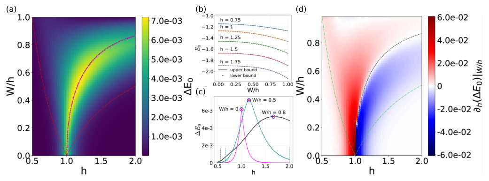
<figcaption class="paper-figure-caption"><b>Fig 1.</b> FIG. 1: Bounds on disorder-averaged ground-state energy density for Z2 disorder. (a) Colormap of the difference between upper and lower bootstrap bounds (the bootstrap gap ∆E0), as a function of relative disorder strength W/h and field h. The red lines indicate the crossover to the Griffiths region and the black line indicates the analytical critical point. Zeros of the partial derivative ∂h∆E0|W/h of the bootstrap gap with respect to h at fixed W/h are indicated with magenta crosses. (b) Upper and lower bootstrap bounds on the ground-state energy density for the RTFIM with Z2 disorder for h = 0.5, 1, 1.5, 2. The maximum bootstrap gap over the entire scanned set is less than 0.0072. (c)...</figcaption>
</figure>
<figure class="paper-figure-card">
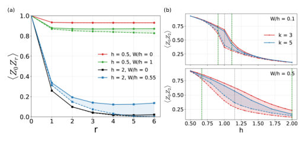
<figcaption class="paper-figure-caption"><b>Fig 2.</b> FIG. 2: Bounds on disorder-averaged ground-state spin-spin correlators ⟨Z0Zr⟩for Z2 disorder. (a) ⟨Z0Zr⟩as a function of r for weakly and strongly disordered ferromagnetic and paramagnetic parameters. (b) ⟨Z0Z2⟩as a function of h for W/h = 0.1, 0.5. Results are shown for two different operator sets with Krylov depth k = 3, 5 (see Tab. I). The vertical green lines indicate the onset of Griffiths regions and the vertical black lines indicate the critical point.</figcaption>
</figure>
<figure class="paper-figure-card">
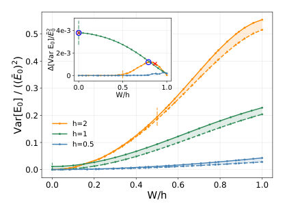
<figcaption class="paper-figure-caption"><b>Fig 3.</b> FIG. 3: Bounds on the scaled energy density variance for Z2 disorder. The variance is scaled by the square of the average of lower and upper bounds on the energy density, with the differences between upper and lower bounds shown in the inset. The onset of the Griffiths region is indicated with vertical lines. The maximum of the difference between upper and lower bounds (indicated with blue circles in the inset) is maximized near the critical point (indicated with red crosses in the inset).</figcaption>
</figure>
<figure class="paper-figure-card">
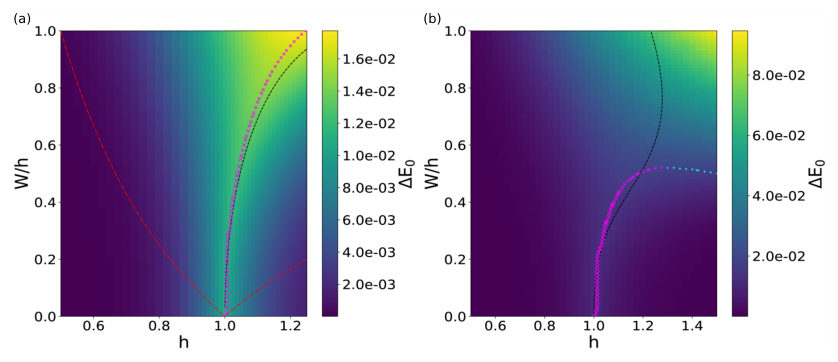
<figcaption class="paper-figure-caption"><b>Fig 4.</b> FIG. 4: Bootstrap gap for uniform and Gaussian disorder. Colormap of difference between upper and lower bootstrap bounds on ground-state energy density (the bootstrap gap ∆E0) of the RTFIM with (a) uniform and (b) Gaussian disorder. The Griffiths lines for uniform disorder are indicated in red and the analytical critical line is indicated in black. The magenta crosses indicate zeros for the partial derivatives with respect to h of the bootstrap bounds at fixed W/h. The blue plus signs in (b) indicate inflection points in the bootstrap gap.</figcaption>
</figure>
<figure class="paper-figure-card">
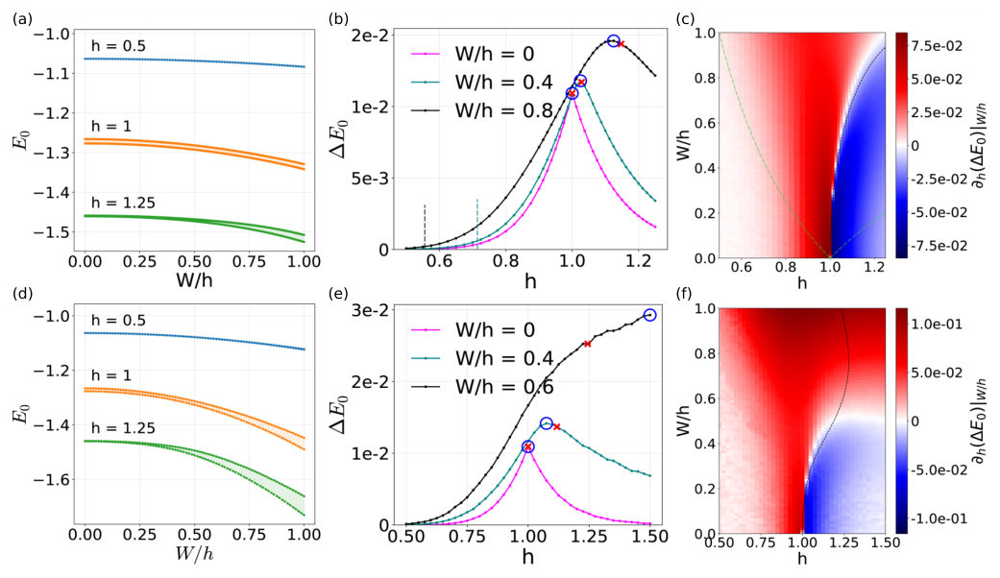
<figcaption class="paper-figure-caption"><b>Fig 5.</b> FIG. 5: Bounds on disorder-averaged ground-state energy for uniform (top row) and Gaussian (bottom row) disorder. From left to right: (a,d) Upper and lower bootstrap bounds for uniform disorder and h = 0.5, 1, 1.25., (b,e) bootstrap gap for W/h = 0, 0.4, 0.6, with the analytical critical point is shown with a red cross and the zeros of ∂h∆E0|W/h indicated with the blue circles. The crossover to the Griffiths region is indicated with vertical lines. (c,f) colormap of ∂h∆E0|W/h, with Griffiths lines indicated in green and the critical line indicated in black, demonstrating the sign change near the critical line.</figcaption>
</figure>
</div>

<p><strong>Summary.</strong> This paper introduces a novel bootstrap framework to rigorously bound ground-state properties of quantum systems with quenched disorder, exemplified by the 1D RTFIM. By extending the operator algebra to include disorder variables, it derives bounds that do not require sampling disorder realizations. The resulting 'bootstrap gap' serves as a powerful diagnostic tool for mapping out the system's phase diagram, revealing critical behavior and Griffiths regimes.</p>
<p><strong>Why it may be interesting.</strong> The rigorous, non-perturbative nature of the bounds and the diagnostic power of the bootstrap gap provide powerful theoretical tools to map out complex phase diagrams in disordered quantum matter, which is highly relevant to understanding localization and critical phenomena.</p>
<details>
<summary>Detailed structure</summary>
<p><strong>Main problem.</strong> The paper develops a rigorous bootstrap framework to obtain two-sided bounds on disorder-averaged ground-state observables for quantum systems subjected to quenched disorder.</p>
<p><strong>Main result.</strong> The method successfully applies to the 1D RTFIM, yielding a 'bootstrap gap' diagnostic that characterizes the phase diagram, showing distinct behavior near Griffiths regions and critical points.</p>
<p><strong>Method.</strong> It extends the operator algebra to include classical disorder variables and uses positivity constraints (including two-replica conditions) within an algebraic quantum mechanics framework to derive rigorous bounds without needing to sample disorder realizations.</p>
<p><strong>Model / system.</strong> The primary model studied is the one-dimensional Random Transverse Field Ising Model (RTFIM), characterized by a Hamiltonian involving random couplings and fields ($\xi_j$). The method is claimed to be generalizable beyond this specific model.</p>
<p><strong>Key observables.</strong> Disorder-averaged ground-state energy density, short-range spin-spin correlators, the variance of the energy density, and the 'bootstrap gap' ($\Delta E_0$).</p>
<p><strong>Important parameters / regimes.</strong> Disorder strength ($W$), magnetic field ($h$), and the disorder distribution type ($\mathbb{Z}_2$, Uniform, Gaussian).</p>
<p><strong>Assumptions / limitations.</strong> The method relies on enforcing positivity constraints on finite subsets of disorder operators and operators, and its application to the thermodynamic limit is a key feature.</p>
<p><strong>Figures summary.</strong> Figures illustrate the bootstrap gap ($\Delta E_0$) for different disorder types, mapping out phase boundaries, and analyze the convergence of the gap with increasing Krylov depth ($k$) using exponential and power-law fits.</p>
<p><strong>Paper structure.</strong> The paper introduces the bootstrap framework, details its application to the RTFIM Hamiltonian using Majorana operators, derives bounds for various observables (including variance via two-replica methods), and analyzes the resulting bootstrap gap's behavior across different quantum phases.</p>
</details>
<details>
<summary>Abstract</summary>
<p>We present a bootstrap framework that yields rigorous two-sided bounds on ground-state observables of quantum systems with quenched disorder. The key idea is to extend the operator algebra to include classical disorder variables and to encode the disorder distribution through a set of moments. The method directly bounds disorder-averaged expectation values for finite or infinite lattice systems and for arbitrary disorder distributions. In contrast to conventional approaches, we do not need to sample disorder realizations, which enables us to make thorough use of symmetries that hold only on average rather than for each disorder realization. Additionally, we show that multi-replica operators can be used to access disorder fluctuations such as the variance of an observable. We apply the method to the one-dimensional random transverse-field Ising model (RTFIM) with discrete, uniform, and Gaussian disorder, obtaining tight bounds on the disorder-averaged ground-state energy density and short-range spin-spin correlators, as well as bounds on the disorder variance of the energy density. Additionally, we show that the difference between the upper and lower bounds on the disorder-averaged ground-state energy density, which we term the bootstrap gap, can be used to map out the phase diagram of the RTFIM. The bootstrap gap is small and flat within the paramagnetic and ferromagnetic phases at weak disorder, grows upon entering the Griffiths regions, and peaks along the critical line.</p>
</details>
<p><sub><a href="#top">↑ back to top</a></sub></p>

<p><a id="paper-2609.21310"></a></p>
<h3 id="commutator-geometry-and-information-preservation-in-the-quantum-switch"><a href="http://arxiv.org/abs/2609.21310v1">Commutator Geometry and Information Preservation in the Quantum Switch</a></h3>
<p><strong>Authors:</strong> Xu Chen, Xue Ma<br>
<strong>Type:</strong> theory · <strong>Category:</strong> quantum information and computing · <strong>PDF:</strong> <a href="https://arxiv.org/pdf/2609.21310v1">https://arxiv.org/pdf/2609.21310v1</a><br>
<strong>Analysis basis:</strong> full PDF text, analyzed in chunks
<strong>Topic relevance:</strong> <code>quantum measurements</code> <strong>1/5</strong></p>
<div class="figure-strip-hint">↔ Scroll figures horizontally</div>
<div class="paper-figures-scroll">
<figure class="paper-figure-card">
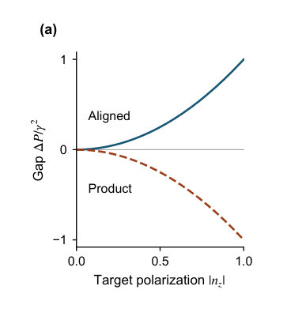
<figcaption class="paper-figure-caption"><b>Fig 1.</b> Fig. 1 Commutator contributions and input orientation for Pauli X and Y channels with a common error probability 0 &lt; γ ≤1. The gap is ∆P = F 2 SW −F 2 FO. (a) For the product input |+⟩C|m⟩T and the aligned input (|0m⟩+|1n⟩)/ √</figcaption>
</figure>
<figure class="paper-figure-card">
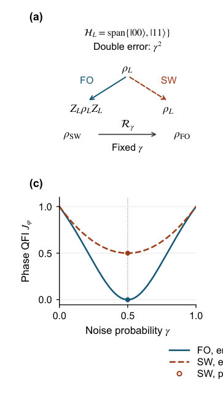
<figcaption class="paper-figure-caption"><b>Fig 2.</b> Fig. 2 Logical error structure, state preservation, and parameter estimation for Pauli X and Y channels with a common error probability γ. (a) The double error branch, of probability γ2, acts on a state ρL in HL = span{|00⟩, |11⟩} as ρL 7→ZLρLZL under fixed order (FO) and as ρL 7→ρL under the quantum switch (SW), where ZL is the logical Pauli Z operator. The branch outputs shown are normalized. The lower arrow represents the CPTP map Rγ, which converts the complete switched output into the fixed order output for every encoded state at fixed γ. (b,c) Squared input fidelity and phase QFI for |ψφ⟩= (|00⟩+ eiφ |11⟩)/ √</figcaption>
</figure>
</div>

<p><strong>Summary.</strong> This theoretical work investigates the difference in information preservation when quantum channels are applied via a 'quantum switch' versus a fixed sequence. By using commutator geometry, the authors derive quantitative bounds showing how the switch affects fidelity and Quantum Fisher Information. The findings connect fundamental algebraic structures to the robustness of quantum information encoding against noise.</p>
<p><strong>Why it may be interesting.</strong> It provides rigorous mathematical tools (commutator geometry) to quantify the advantage or disadvantage of indefinite causal order in noisy quantum processes, which is highly relevant for quantum communication protocols.</p>
<details>
<summary>Detailed structure</summary>
<p><strong>Main problem.</strong> The paper compares how information preservation (fidelity, QFI) differs when two commuting quantum channels are applied in a quantum switch versus a fixed sequential order.</p>
<p><strong>Main result.</strong> For product inputs, the switch preserves fidelity at least as well as the fixed order; however, the gap is quantified by commutator identities, showing complex dependencies on the input state and channel structure.</p>
<p><strong>Method.</strong> The analysis uses operator sum descriptions, commutator identities, and root fidelity to derive exact mathematical relationships between the output states of the two operational orders.</p>
<p><strong>Model / system.</strong> The model involves two commuting quantum channels acting on a joint system, analyzed using concepts from quantum error correction (e.g., Pauli codes) and quantum metrology.</p>
<p><strong>Key observables.</strong> Fidelity gap ($F_{FO} - F_{SW}$), Quantum Fisher Information (QFI), distinguishability, and commutator components ($Q_{ij}$).</p>
<p><strong>Important parameters / regimes.</strong> Input state ($
ho$), channel parameters (e.g., error probabilities for Pauli X/Y channels), and the structure of the joint code.</p>
<p><strong>Assumptions / limitations.</strong> The analysis is restricted to two commuting channels and often assumes specific product or pure encoded state families for deriving exact formulas.</p>
<p><strong>Figures summary.</strong> Figures illustrate the fidelity gap ($\Delta P$) for Pauli X and Y channels as a function of input orientation and control angle, showing distinct gain/loss regimes.</p>
<p><strong>Paper structure.</strong> The paper progresses by defining the comparison between switch and fixed order, deriving commutator identities, establishing monotonicity for product states, and finally connecting the fidelity gap to QFI gain for pure encoded families.</p>
</details>
<details>
<summary>Abstract</summary>
<p>Two commuting channels yield the same composite channel in either fixed order, yet their quantum switch can alter information preservation. We study how this effect depends on the input state, retaining the joint output of the control and target. Exact Kraus commutator identities determine overlap and squared fidelity gaps. Fixed order preserves product inputs at least as well as the switch in fidelity. The reverse inequality holds for pure states of two qubits whose control Schmidt basis can be chosen to coincide with the order basis. A commutator matrix determines the target basis that maximizes the squared fidelity gap at fixed entanglement within this aligned family. For Pauli $X$ and $Y$ channels with equal error probabilities, the switch replaces a logical phase flip with an operator that stabilizes a joint code. At fixed noise, the switch preserves at least as much distinguishability and quantum Fisher information as fixed order for every state family in this code. For the pure encoded family studied here, exact formulas connect the phase information gain to the squared fidelity gap and quantify the reduction in information about the noise probability. Optimizing the probes yields equal maximal quantum Fisher information for noise estimation under both joint channels. These results connect commutator geometry and logical error structure to state preservation and the retention of encoded information.</p>
</details>
<p><sub><a href="#top">↑ back to top</a></sub></p>

<p><a id="paper-2609.21243"></a></p>
<h3 id="from-trainability-diagnostics-to-optimization-claims-boundaries-and-controls-in-variational-quantum-optimization"><a href="http://arxiv.org/abs/2609.21243v1">From Trainability Diagnostics to Optimization Claims: Boundaries and Controls in Variational Quantum Optimization</a></h3>
<p><strong>Authors:</strong> Pilsung Kang<br>
<strong>Type:</strong> theory · <strong>Category:</strong> quantum information and computing · <strong>PDF:</strong> <a href="https://arxiv.org/pdf/2609.21243v1">https://arxiv.org/pdf/2609.21243v1</a><br>
<strong>Analysis basis:</strong> full PDF text, analyzed in chunks
<strong>Topic relevance:</strong> <code>quantum measurements</code> <strong>1/5</strong></p>
<div class="figure-strip-hint">↔ Scroll figures horizontally</div>
<div class="paper-figures-scroll">
<figure class="paper-figure-card">
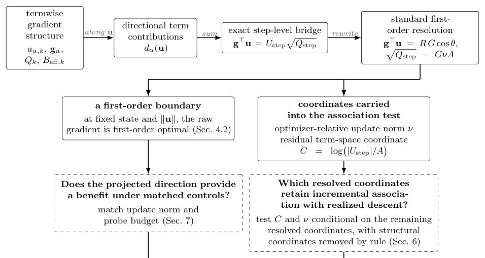
<figcaption class="paper-figure-caption"><b>Fig 1.</b> Figure 1: Overview of the analysis. The exact step-level bridge is rewritten in standard first-order geometry, which exposes a fixed-norm first-order boundary and, on the nondegenerate domain, a residual term-space coordinate C. The lower branches summarize the association and matched- control tests and their main conclusions. Notation is defined in Sections 3 and 4.</figcaption>
</figure>
<figure class="paper-figure-card">

<figcaption class="paper-figure-caption"><b>Fig 2.</b> Figure 1 summarizes how these pieces fit together. The remainder of this paper is organized as follows. Section 2 reviews related work on BPs, trainability mitigation, and gradient surgery. Sections 3 and 4 introduce the Hamiltonian-term</figcaption>
</figure>
<figure class="paper-figure-card">
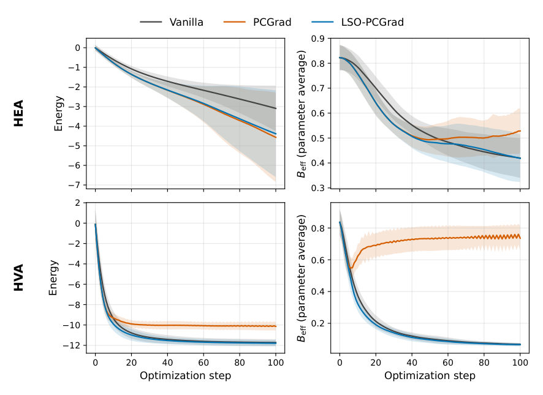
<figcaption class="paper-figure-caption"><b>Fig 3.</b> Figure 2: Seed-averaged optimization trajectories for the three primary update rules at the largest tested condition, (n, d) = (10, 8): energy (left) and parameter-averaged Beff (right) for HEA (top) and HVA (bottom). Lines are means over 30 seeds and bands indicate one standard deviation across seeds. In HVA, PCGrad sustains an elevated Beff while its energy plateaus above the vanilla and LSO-PCGrad trajectories. The late-step oscillation in the former trajectory reflects a two-step alternation present in individual seed trajectories rather than an averaging artifact. In HEA, this condition is among the minority in which PCGrad improves final energy (cf. Table 3). Corresponding figures for...</figcaption>
</figure>
</div>

<p><strong>Summary.</strong> This work investigates the gap between knowing if a quantum circuit is 'trainable' and actually achieving good optimization results. By developing step-level diagnostics based on Hamiltonian term decomposition, the authors show that while these diagnostics characterize the gradient structure, they are insufficient on their own to prove optimization success. True performance requires careful matching of update norms and search budgets.</p>
<p><strong>Why it may be interesting.</strong> It provides a deep theoretical understanding of the limitations of current diagnostic tools in VQA, suggesting that structural metrics must be paired with rigorous control matching to claim optimization success.</p>
<details>
<summary>Detailed structure</summary>
<p><strong>Main problem.</strong> The paper addresses the 'trainability–optimization gap' in Variational Quantum Algorithms (VQAs), where gradient signal availability does not guarantee successful energy minimization.</p>
<p><strong>Main result.</strong> Gradient-structure diagnostics can characterize trainability and update geometry, but they cannot serve as standalone evidence of optimization benefit; true benefit requires controls matched on update norm and search budget.</p>
<p><strong>Method.</strong> The authors introduce step-level diagnostics by treating coefficient-weighted Hamiltonian-term gradients as task-like components, deriving a bridge between termwise organization, directional activity, and first-order descent.</p>
<p><strong>Model / system.</strong> The study uses Variational Quantum Algorithms (VQAs) applied to transverse-field Ising model instances, employing both hardware-efficient and Hamiltonian variational ansatzes.</p>
<p><strong>Key observables.</strong> Step-level diagnostics ($U_{	ext{step}}$, $Q_{	ext{step}}$), first-order descent, final energy, and various correlation coefficients ($  ext{corr}(\Delta E_{    ext{pred}}, \Delta E_{  ext{act}})$).</p>
<p><strong>Important parameters / regimes.</strong> Update norm, search budget, and the structure of the Hamiltonian decomposition into Pauli terms.</p>
<p><strong>Assumptions / limitations.</strong> The analysis relies on establishing an exact bridge between gradient components and assumes that optimization benefit requires matched controls on update norm and search budget.</p>
<p><strong>Figures summary.</strong> Figure 1 provides an overview summarizing the step-level bridge, its resolution into standard first-order geometry, and the main conclusions regarding association tests and matched controls.</p>
<p><strong>Paper structure.</strong> The paper progresses by defining the step-level diagnostic framework, deriving the mathematical bridge, testing various optimization rules (vanilla, PCGrad, LSO-PCGrad) on Ising models, and concluding with rigorous analysis showing the limitations of structure-based diagnostics.</p>
</details>
<details>
<summary>Abstract</summary>
<p>Barren plateau diagnostics characterize whether gradient signal remains available for training, but surviving signal need not translate into successful optimization. We study this trainability--optimization gap at the level of optimizer steps. Treating coefficient-weighted Hamiltonian-term gradients as task-like components, we introduce step-level diagnostics and derive an exact bridge between signed termwise organization, directional activity, and first-order descent. Resolving this bridge into standard first-order geometry shows that the apparent organization--activity factors are not independent optimization axes and that, at fixed state and update norm, the raw gradient maximizes first-order descent of the summed objective. We compare vanilla gradient descent, a deterministic Hamiltonian-term PCGrad variant, and probe-gated LSO-PCGrad on transverse-field Ising model instances with hardware-efficient and Hamiltonian variational ansatzes, together with matched controls for update norm and probe budget. Blind projection can improve an organization diagnostic while worsening final energy and first-order predictability. After conditioning on standard first-order geometry, residual term-space composition shows no reproducible material incremental association with realized descent, while optimizer-relative update norm shows positive material associations in some settings without cross-regime reproducibility. Matched controls provide no resolved final-energy benefit attributable to the projected direction, and the improvement of LSO-PCGrad is more consistent with probe-based search and step-norm adaptation than with Hamiltonian-term projection itself. These results show that gradient-structure diagnostics can characterize trainability and update geometry without serving as standalone evidence of optimization benefit, which requires controls matched on update norm and search budget.</p>
</details>
<p><sub><a href="#top">↑ back to top</a></sub></p>
<h2 id="other-papers-21">Other papers (21)</h2>
<p><em>Papers from primary archives without highlighted authors or any topic match. Click to expand.</em></p>
<details>
<summary>Show other papers</summary>

<p><a id="paper-2609.22047"></a></p>
<h3 id="asymmetric-quantum-cloning-on-orthogonal-orbits-and-four-mode-fermionic-states"><a href="http://arxiv.org/abs/2609.22047v1">Asymmetric quantum cloning on orthogonal orbits and four-mode fermionic states</a></h3>
<p><strong>Authors:</strong> Piotr Ćwikliński, Michał Studziński<br>
<strong>Type:</strong> theory · <strong>Category:</strong> quantum information and computing · <strong>PDF:</strong> <a href="https://arxiv.org/pdf/2609.22047v1">https://arxiv.org/pdf/2609.22047v1</a><br>
<strong>Analysis basis:</strong> full PDF text, analyzed in chunks</p>
<div class="figure-strip-hint">↔ Scroll figures horizontally</div>
<div class="paper-figures-scroll">
<figure class="paper-figure-card">
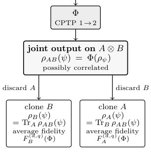
<figcaption class="paper-figure-caption"><b>Fig 1.</b> FIG. 1. Operational setup for asymmetric one-to-two cloning on an orthogonal orbit. The channel maps the unknown input ρψ to a joint state on A⊗B, which is not assumed to factorize. The downward branches denote partial traces: discarding A gives clone B, while discarding B gives clone A. The pointwise overlaps are fA(ψ; Φ) and fB(ψ; Φ); their orbit averages are the fidelities in Eqs. (10) and (11).</figcaption>
</figure>
<figure class="paper-figure-card">
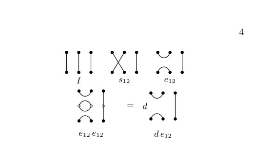
<figcaption class="paper-figure-caption"><b>Fig 2.</b> FIG. 2. Pairing diagrams in B3(d). Each diagram has three upper (output) and three lower (input) vertices, ordered from left to right. Upper row: the identity, transposition s12, and contraction e12; each leaves the third tensor factor unchanged. Lower row: multiplication by vertical concatenation. The hollow circles mark the identified vertices. Summing the common index around the closed loop contributes d, giving e2 12 = de12.</figcaption>
</figure>
<figure class="paper-figure-card">
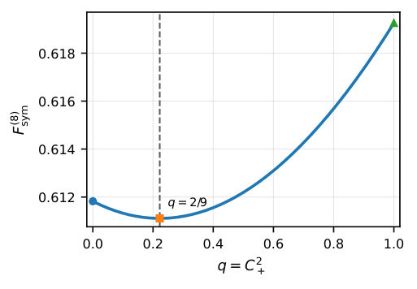
<figcaption class="paper-figure-caption"><b>Fig 3.</b> FIG. 4. Optimal symmetric local fidelity for the four-mode family, with q = C2 +. The circle, square, and triangle mark the Gaussian orbit q = 0, the projective 2-design orbit q = 2/9, and the maximal-concurrence orbit q = 1, respectively. The dashed vertical line locates the unique minimum at q = 2/9, where the second moment equals the Haar moment.</figcaption>
</figure>
<figure class="paper-figure-card">
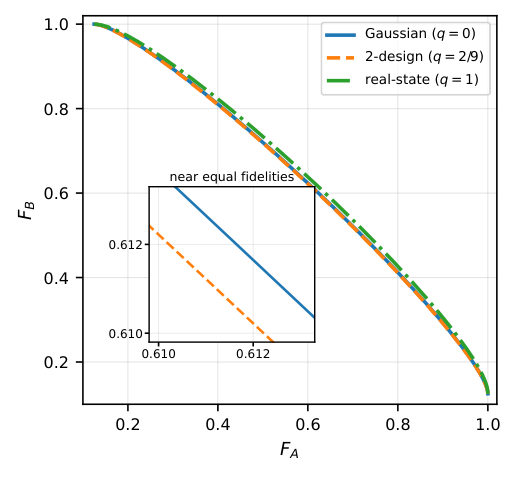
<figcaption class="paper-figure-caption"><b>Fig 4.</b> FIG. 3. Pareto boundaries in the (FA, FB) plane for three d = 8 orthogonal orbits, corresponding through triality to three four-mode fermionic concurrence classes. The solid curve is the Gaussian orbit q = 0; the dashed curve is the projective 2-design orbit q = 2/9, with the universal eight-dimensional average local-fidelity boundary. The dash-dotted curve is q = 1, the real-state ensemble in orthogonal coordinates. The inset uses the same axes and resolves the Gaussian and 2- design curves near equal fidelities.</figcaption>
</figure>
<figure class="paper-figure-card">
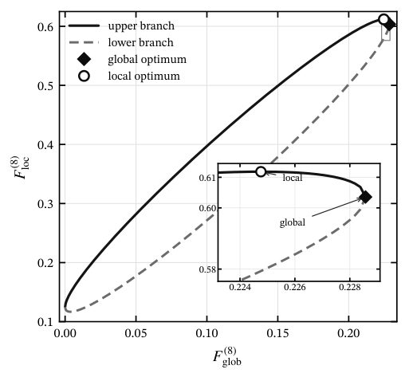
<figcaption class="paper-figure-caption"><b>Fig 5.</b> FIG. 5. Average local fidelity versus average global fidelity on the four-mode Gaussian orbit, restricted to the covariant channels Φc with real coefficients c = (x, x, z)T and cT G8c = 1. These channels are output-exchange symmetric and have Choi rank eight. The solid and dashed curves are the + and − branches of Eq. (107). The diamond at their common right endpoint marks the global optimum; the circle marks the unique local optimum. The inset separates these points. The plotted curves describe only this family of channels and not the full set of attainable local–global fidelity pairs.</figcaption>
</figure>
</div>
<p><strong>Summary.</strong> This paper rigorously determines the achievable fidelity region for asymmetric quantum cloning when the input states are constrained to specific orbits of the orthogonal group. By employing advanced algebraic techniques involving the Brauer algebra, the authors derive explicit optimal cloning channels. The results are then applied to the physical system of four-mode fermionic states, establishing fundamental limits on quantum state duplication for these systems.</p>
<p><strong>Why it may be interesting.</strong> This work provides deep connections between quantum information theory (cloning bounds) and representation theory (Brauer algebra, orthogonal groups), which is highly relevant for understanding fundamental limits in quantum communication protocols.</p>
<details>
<summary>Detailed structure</summary>
<p><strong>Main problem.</strong> The paper investigates the achievable fidelity region for asymmetric quantum cloning processes ($1 	o 2$) applied to pure states residing on orbits generated by the orthogonal group $O(d)$. It specifically applies these general results to four-mode fermionic states.</p>
<p><strong>Main result.</strong> The full region of achievable average single-copy fidelities is determined by solving a spectral problem derived from the Brauer algebra. The optimal cloner for the joint two-copy fidelity is shown to be different from the one optimal for single-copy fidelities.</p>
<p><strong>Method.</strong> The authors reduce the optimization over all CPTP maps to a finite-dimensional spectral problem using orthogonal covariance and the Brauer algebra. They characterize the achievable region using a support function derived from the Uhlmann–Jozsa fidelity.</p>
<p><strong>Model / system.</strong> The primary model is the quantum cloning process ($\Phi: 
ho_\psi 	o 
ho_{AB}(\psi)$) acting on states $\psi$ belonging to orbits $O(d)_q$ generated by the orthogonal group $O(d)$. The specific application involves four-mode fermionic states in the even-parity sector.</p>
<p><strong>Key observables.</strong> Average single-copy fidelities ($F^A, F^B$), the two-copy moment ($\mathcal{M}^{(d)}_2(q)$), and the support function $h_{O(d)}^q(a, b)$.</p>
<p><strong>Important parameters / regimes.</strong> The dimension $d \ge 3$, the orbit parameter $q(\psi) = |\psi^T \psi|^2 \in [0, 1]$, and the fidelity parameters $a$ and $b$.</p>
<p><strong>Assumptions / limitations.</strong> The analysis assumes the input state $\psi$ is drawn from the invariant measure $\mu_q$ on the orbit $O(d)_q$, and the optimization is performed over CPTP maps.</p>
<p><strong>Figures summary.</strong> Figure 1 illustrates the operational setup for asymmetric one-to-two cloning. Figure 2 illustrates pairing diagrams in the Brauer algebra $B_3(d)$ related to the cloning process.</p>
<p><strong>Paper structure.</strong> The paper first establishes the general framework for asymmetric cloning on $O(d)$ orbits, determining the fidelity region via spectral methods. It then applies these general results to the specific case of four-mode fermionic states, utilizing triality to connect the two analyses.</p>
</details>
<details>
<summary>Abstract</summary>
<p>In this work, we study asymmetric $(1\to2)$ quantum cloning for pure states belonging to orbits generated by the orthogonal group. For every dimension $(d\geq3)$, we determine the full region of achievable pairs of average single-copy fidelities. Using orthogonal covariance and the Brauer algebra, we reduce the optimization over all CPTP maps to a finite-dimensional spectral problem and construct explicit optimal cloning channels. We then apply the general results to four-mode fermionic states in the even-parity sector. Using triality, we identify the fixed-concurrence fermionic families with the orthogonal orbits considered in the first part of the paper. In particular, for pure Gaussian states we show that the symmetric locally optimal cloner is unique. We also compare local and global cloning and find that the channel optimal for the joint two-copy fidelity is different from the one optimal for the single-copy fidelities. Finally, we show that the locally optimal cloner cannot be implemented using only operations which preserve fermionic Gaussian states.</p>
</details>
<p><sub><a href="#top">↑ back to top</a></sub></p>

<p><a id="paper-2609.21916"></a></p>
<h3 id="asymptotics-for-frequency-redundancies-in-quantum-machine-learning-models"><a href="http://arxiv.org/abs/2609.21916v1">Asymptotics for Frequency Redundancies in Quantum Machine Learning Models</a></h3>
<p><strong>Authors:</strong> Felix Paul, Bhilahari Jeevanesan, Peter Jung<br>
<strong>Type:</strong> theory · <strong>Category:</strong> quantum information and computing · <strong>PDF:</strong> <a href="https://arxiv.org/pdf/2609.21916v1">https://arxiv.org/pdf/2609.21916v1</a><br>
<strong>Analysis basis:</strong> full PDF text, analyzed in chunks</p>
<div class="figure-strip-hint">↔ Scroll figures horizontally</div>
<div class="paper-figures-scroll">
<figure class="paper-figure-card">
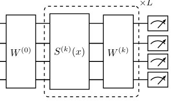
<figcaption class="paper-figure-caption"><b>Fig 1.</b> FIG. 1. Circuit representation of the re-uploading scheme described in Eq. (2). Encoding and variational blocks are being used in an alternating pattern.</figcaption>
</figure>
<figure class="paper-figure-card">
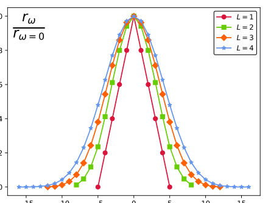
<figcaption class="paper-figure-caption"><b>Fig 2.</b> FIG. 2. Normalized redundancy profiles for the arithmetic progres- sion of eigenvalues for varying values of L at d = 5. For L = 1, rω is a triangle function, see Eq. (25). As L grows, the profile becomes an increasingly narrow Gaussian.</figcaption>
</figure>
<figure class="paper-figure-card">
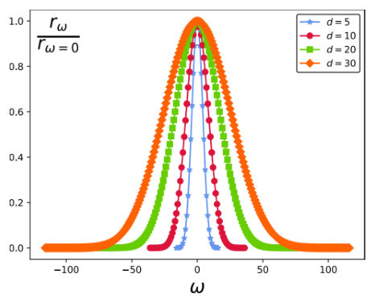
<figcaption class="paper-figure-caption"><b>Fig 3.</b> FIG. 3. Normalized redundancy profiles for the arithmetic progres- sion of eigenvalues with L = 4 and varying d.</figcaption>
</figure>
<figure class="paper-figure-card">

<figcaption class="paper-figure-caption"><b>Fig 4.</b> Figure 2 illustrates the emerging Gaussian profile for in- creasing values of L while Fig. 3 highlights the increasing width of the Gaussian envelope with growing d at fixed L.</figcaption>
</figure>
<figure class="paper-figure-card">
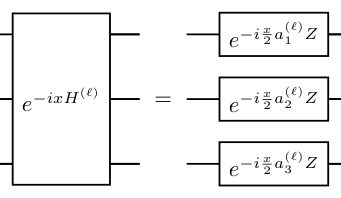
<figcaption class="paper-figure-caption"><b>Fig 5.</b> FIG. 4. Illustrative circuit representation of Eq. (26) for three qubits.</figcaption>
</figure>
</div>
<p><strong>Summary.</strong> This work mathematically analyzes the frequency redundancy spectrum in Quantum Fourier Models (QFMs) by studying how the eigenvalues of the data re-uploading Hamiltonians shape this spectrum. The authors prove that for many structured eigenvalue choices, the redundancy profile converges to a Gaussian distribution as the model depth increases. This highlights that the choice of encoding strategy is crucial for controlling the model's spectral bias.</p>
<p><strong>Why it may be interesting.</strong> The universal Gaussian convergence suggests that the structure of the encoding Hamiltonian dictates the spectral properties of the model, providing theoretical constraints on designing QFMs for specific tasks.</p>
<details>
<summary>Detailed structure</summary>
<p><strong>Main problem.</strong> The paper investigates how the frequency redundancy spectrum in Quantum Fourier Models (QFMs) is determined by the choice of eigenvalues in the data re-uploading Hamiltonians.</p>
<p><strong>Main result.</strong> The frequency redundancy profile ($r_\omega$) generically converges to a Gaussian profile as the number of layers increases, a feature linked to the central limit theorem for random walks.</p>
<p><strong>Method.</strong> The analysis employs generating functions and Cauchy's integral formula to calculate the redundancy, followed by asymptotic evaluation techniques like Laplace's method for large numbers of layers.</p>
<p><strong>Model / system.</strong> The model is a Quantum Fourier Model (QFM) built using Parametrized Quantum Circuits (PQCs) with a layered, data re-uploading structure, characterized by diagonal encoding Hamiltonians $H^{(\ell)}$ with eigenvalues $\Lambda^{(\ell)}$.</p>
<p><strong>Key observables.</strong> Frequency redundancy ($r_\omega$), which measures the number of ways a specific frequency $\omega$ can be constructed from the eigenvalues.</p>
<p><strong>Important parameters / regimes.</strong> Number of layers ($L$), dimension of the Hilbert space ($d$), and the specific structure of the eigenvalues (e.g., arithmetic progressions, fixed values).</p>
<p><strong>Assumptions / limitations.</strong> The analysis assumes the encoding Hamiltonians are diagonal and that the feature vector $x$ is one-dimensional for simplicity.</p>
<p><strong>Figures summary.</strong> Figures illustrate the QFM circuit structure, showing the transition of the redundancy profile from a simple function (like a triangle) to a Gaussian shape as the number of layers increases.</p>
<p><strong>Paper structure.</strong> The paper introduces the QFM structure and the redundancy definition using generating functions. It then derives and analyzes the asymptotic behavior of $r_\omega$ for structured eigenvalue choices (arithmetic, fixed), demonstrating the universal Gaussian limit.</p>
</details>
<details>
<summary>Abstract</summary>
<p>The redundancy distribution of the frequency spectrum has been shown in the literature to impact the expressivity and trainability of Quantum Fourier Models (QFMs). In this work, we address the question of how this redundancy spectrum is shaped by the choice of eigenvalues of the data re-uploading Hamiltonians, using a simple mathematical formalism based on generating functions. We derive exact and asymptotic redundancy profiles for several structured eigenvalue choices identical for every layer, including arithmetic progressions and single-qubit Pauli encodings, and show that both approach a Gaussian profile as the number of layers grows. We then show that this Gaussian limit is not specific to these constructions but is a generic feature of QFMs built from integer eigenvalues that are identical in every layer. These results can be tied to the central limit theorem for random walks. These results clarify why generic or unstructured encoding choices give rise to a redundancy bias that favours low frequencies, highlighting the importance of well-thought-out encoding strategies when constructing a QFM.</p>
</details>
<p><sub><a href="#top">↑ back to top</a></sub></p>

<p><a id="paper-2609.20927"></a></p>
<h3 id="bootstrapping-classical-systems-with-quenched-disorder"><a href="http://arxiv.org/abs/2609.20927v1">Bootstrapping Classical Systems with Quenched Disorder</a></h3>
<p><strong>Authors:</strong> Minjae Cho, Yaprak Önder, Eslam Khalaf, Michael G. Scheer<br>
<strong>Type:</strong> theory · <strong>Category:</strong> statistical mechanics · <strong>PDF:</strong> <a href="https://arxiv.org/pdf/2609.20927v1">https://arxiv.org/pdf/2609.20927v1</a><br>
<strong>Analysis basis:</strong> full PDF text, analyzed in chunks</p>
<div class="figure-strip-hint">↔ Scroll figures horizontally</div>
<div class="paper-figures-scroll">
<figure class="paper-figure-card">
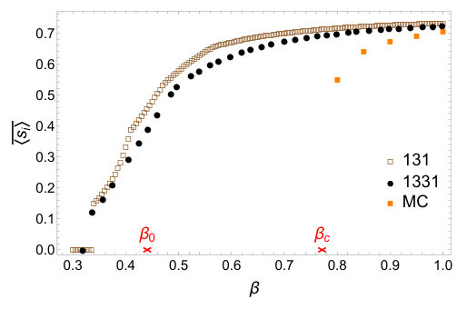
<figcaption class="paper-figure-caption"><b>Fig 1.</b> FIG. 1. Upper bounds on ⟨si⟩at p = 0.75 obtained from LP(D131) (brown) and LP(D1331) (black), together with Monte Carlo estimates (orange) obtained using the Metropo- lis algorithm for 200 disorder realizations on a 50×50 periodic lattice with 100000 sweeps. Also shown are the critical val- ues of β for the clean case (β0 = log(1+ √</figcaption>
</figure>
<figure class="paper-figure-card">
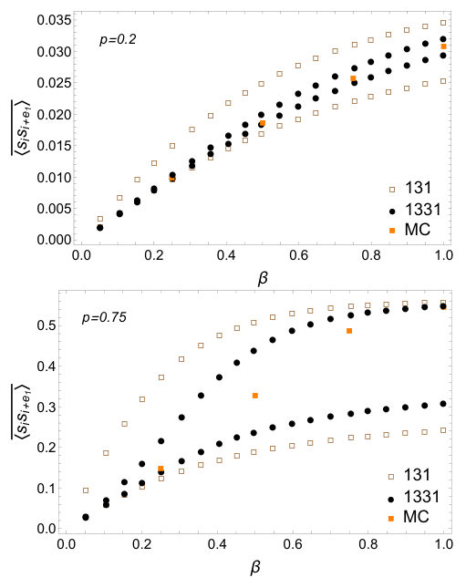
<figcaption class="paper-figure-caption"><b>Fig 2.</b> FIG. 2. Lower and upper bounds on ⟨sisi+e1⟩at p = 0.2 (top) and p = 0.75 (bottom) obtained from LPZ2(D131) (brown) and LPZ2(D1331) (black), together with Monte Carlo estimates (orange) obtained using the Metropolis algorithm for 200 disorder realizations on a 50×50 periodic lattice with 100000 sweeps.</figcaption>
</figure>
<figure class="paper-figure-card">
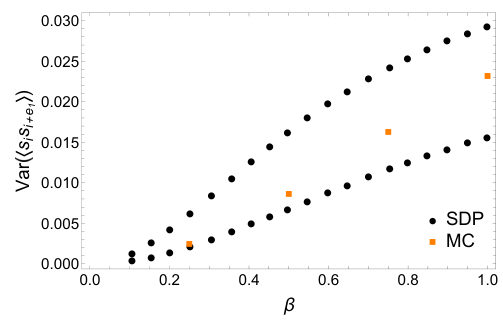
<figcaption class="paper-figure-caption"><b>Fig 3.</b> FIG. 3. Lower and upper bounds (black) on Var(⟨sisi+e1⟩) at p = 0.2 obtained from SDPZ2(D131), together with Monte Carlo estimates (orange) obtained using the Metropolis algo- rithm for 200 disorder realizations on a 50×50 periodic lattice with 30000 sweeps.</figcaption>
</figure>
<figure class="paper-figure-card">
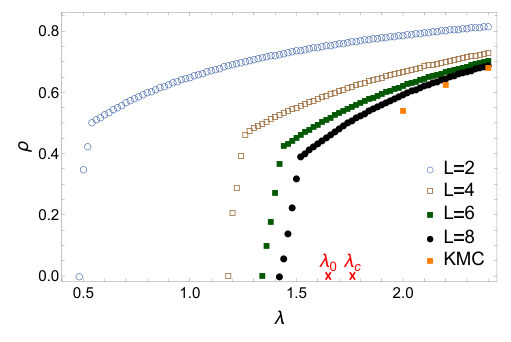
<figcaption class="paper-figure-caption"><b>Fig 4.</b> FIG. 4. Upper bounds on the infection density ρ =</figcaption>
</figure>
<figure class="paper-figure-card">
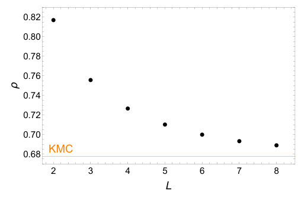
<figcaption class="paper-figure-caption"><b>Fig 5.</b> FIG. 5. Upper bounds (black) on the infection density ρ = ⟨ 1+si</figcaption>
</figure>
</div>
<p><strong>Summary.</strong> This work introduces a powerful bootstrap framework using linear and semidefinite programming to derive rigorous bounds on observables in disordered classical statistical systems. By applying this to models like the random Ising model, the authors successfully analyze complex phenomena such as the Griffiths region. It provides a mathematically rigorous approach to tackling the notoriously difficult problem of quenched disorder.</p>
<p><strong>Why it may be interesting.</strong> The rigorous mathematical techniques developed (LP/SDP bounds) provide powerful, non-perturbative tools to analyze complex, disordered many-body systems, which is a major challenge in modern statistical physics.</p>
<details>
<summary>Detailed structure</summary>
<p><strong>Main problem.</strong> The paper develops a bootstrap method to derive rigorous mathematical bounds on disorder-averaged observables in classical statistical systems subjected to quenched disorder.</p>
<p><strong>Main result.</strong> The method successfully applies to models like the random site-diluted Ising model and the disordered contact process, yielding bounds that can be analyzed for critical behavior, such as identifying the Griffiths region.</p>
<p><strong>Method.</strong> The core method involves reformulating the constraints imposed by the disorder average into a sequence of linear programming (LP) and semidefinite programming (SDP) problems.</p>
<p><strong>Model / system.</strong> The study focuses on classical statistical systems with quenched disorder, exemplified by the two-dimensional random site-diluted Ising model and the one-dimensional disordered contact process. The physics is governed by disorder-averaged Hamiltonians and probability measures.</p>
<p><strong>Key observables.</strong> Disorder-averaged magnetization, nearest-neighbor correlators, two-replica correlators, and probabilities $P_1, P_2, P_3$ exhibiting kinks.</p>
<p><strong>Important parameters / regimes.</strong> The disorder concentration parameter ($p$), temperature/inverse temperature ($eta$), and lattice size ($L$) are crucial parameters defining the phase diagram and scaling behavior.</p>
<p><strong>Assumptions / limitations.</strong> The method relies on the positivity of probability measures, the existence of disorder averages, and the ability to formulate constraints as linear/semidefinite inequalities.</p>
<p><strong>Figures summary.</strong> Figures illustrate the transition of probabilities across 'kinks' in the phase diagram and compare bootstrap bounds (with and without specific inequalities) against expected theoretical values.</p>
<p><strong>Paper structure.</strong> The paper builds the framework by defining the mathematical constraints (positivity, equations of motion) and then applying this framework to specific models (RSIM, DCP) to derive bounds and analyze critical phenomena like the Griffiths region.</p>
</details>
<details>
<summary>Abstract</summary>
<p>We introduce a bootstrap method for deriving bounds on disorder-averaged observables in classical statistical systems with quenched disorder. The three main ingredients of the bootstrap are the positivity of ensembles of probability measures, disorder-averaged equations of motion, and explicit expectation values of random coupling variables. Together, these ingredients lead to a linear programming problem over the space of disorder averages. By further employing the positivity of the two-replica Gram matrix, we also formulate a semidefinite programming problem that produces bounds on two-replica correlators. We demonstrate the method using two examples: the two-dimensional random site-diluted Ising model and the one-dimensional disordered contact process. For the latter example, the bootstrap bounds exhibit a region of multiple kinks that we relate to the Griffiths region, whose finite-size scaling analysis yields a typical correlation length exponent in good numerical agreement with the known value.</p>
</details>
<p><sub><a href="#top">↑ back to top</a></sub></p>

<p><a id="paper-2609.21002"></a></p>
<h3 id="dual-sublattice-ferromagnetism-driven-by-cooperative-double-exchange-and-superexchange-at-ndniomath434mathcamnomath435math-interfaces"><a href="http://arxiv.org/abs/2609.21002v1">Dual-Sublattice Ferromagnetism Driven by Cooperative Double Exchange and Superexchange at NdNiO$_3$/CaMnO$_3$ Interfaces</a></h3>
<p><strong>Authors:</strong> Sharup Sheikh, Uditha M. Jayathilake, Michael Terilli, Mikhail Kareev, Jay R. Paudel, Arian Arab, Christoph Klewe, Tien-Lin Lee, Jak Chakhalian, Alexander X. Gray<br>
<strong>Type:</strong> experiment · <strong>Category:</strong> strongly correlated electrons · <strong>PDF:</strong> <a href="https://arxiv.org/pdf/2609.21002v1">https://arxiv.org/pdf/2609.21002v1</a><br>
<strong>Analysis basis:</strong> full PDF text, analyzed in chunks</p>
<div class="figure-strip-hint">↔ Scroll figures horizontally</div>
<div class="paper-figures-scroll">
<figure class="paper-figure-card">
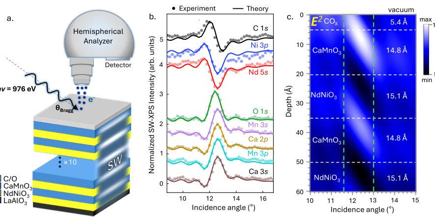
<figcaption class="paper-figure-caption"><b>Fig 1.</b> Figure 1. Soft X-ray standing-wave geometry and depth-selective photoemission response in the</figcaption>
</figure>
<figure class="paper-figure-card">
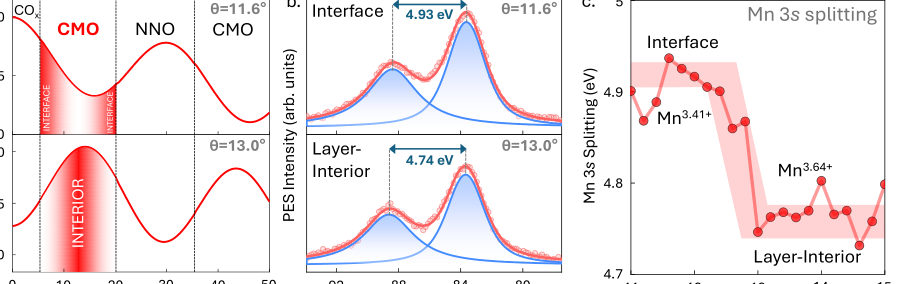
<figcaption class="paper-figure-caption"><b>Fig 2.</b> Figure 2. Depth-resolved Mn valence reconstruction within CaMnO3 at the NdNiO3/CaMnO3</figcaption>
</figure>
<figure class="paper-figure-card">
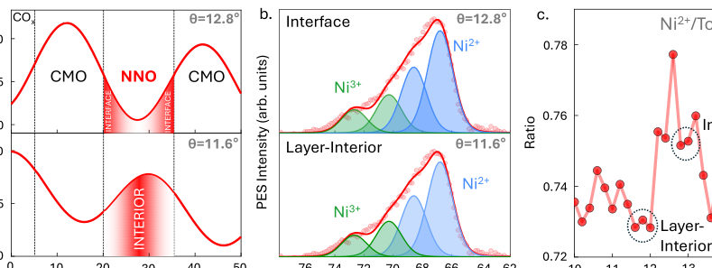
<figcaption class="paper-figure-caption"><b>Fig 3.</b> Figure 3. Depth-resolved Ni valence reconstruction within NdNiO3 at the NdNiO3/CaMnO3</figcaption>
</figure>
<figure class="paper-figure-card">
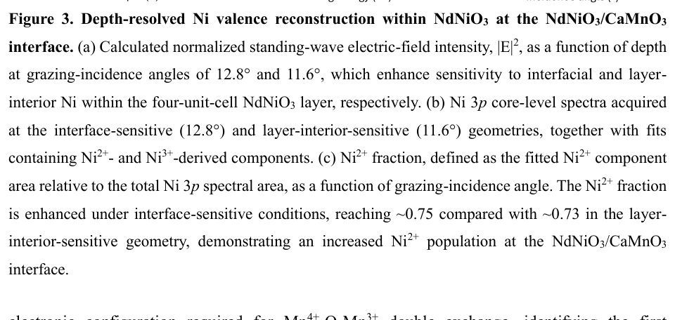
<figcaption class="paper-figure-caption"><b>Fig 4.</b> Figure 3a shows the calculated standing-wave intensity profiles at 12.8° and 11.6°, which enhance</figcaption>
</figure>
<figure class="paper-figure-card">
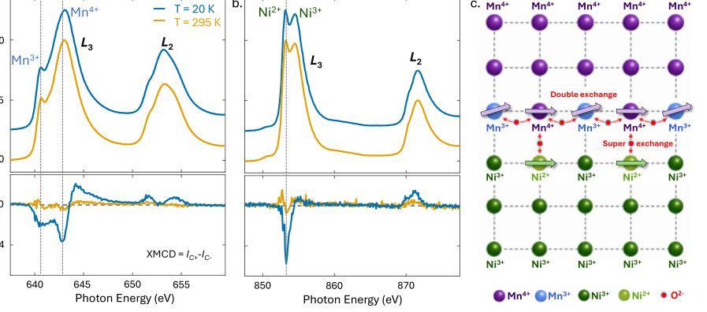
<figcaption class="paper-figure-caption"><b>Fig 5.</b> Figure 4. Dual-sublattice ferromagnetism and cooperative interfacial exchange in the</figcaption>
</figure>
</div>
<p><strong>Summary.</strong> This paper investigates how to induce ferromagnetism at the interface of $ ext{NdNiO}_3/   ext{CaMnO}_3$ superlattices. Using advanced X-ray spectroscopies, the authors prove that interfacial valence reconstruction creates the necessary conditions—specifically, $    ext{Mn}^{3+}$ and $ ext{Ni}^{2+}$—to activate cooperative double exchange and superexchange. This coupling mechanism successfully engineers a robust, dual-sublattice ferromagnetism.</p>
<p><strong>Why it may be interesting.</strong> This work provides a clear, experimentally validated blueprint for designing magnetic properties in artificial quantum materials by engineering the local electronic structure at interfaces, which is highly relevant to correlated electron physics.</p>
<details>
<summary>Detailed structure</summary>
<p><strong>Main problem.</strong> The study aims to understand how to engineer emergent ferromagnetism at the interface between correlated oxides by controlling the electronic structure.</p>
<p><strong>Main result.</strong> The research demonstrates that interfacial valence reconstruction, specifically enhanced $ ext{Mn}^{3+}$ and $ ext{Ni}^{2+}$ character, activates cooperative double exchange and superexchange pathways, leading to dual-sublattice ferromagnetism.</p>
<p><strong>Method.</strong> The study employs depth-resolved Standing-Wave X-ray Photoelectron Spectroscopy (SW-XPS) to map valence states and X-ray Magnetic Circular Dichroism (XMCD) to measure magnetic responses.</p>
<p><strong>Model / system.</strong> The physical system is an epitaxial superlattice of $   ext{NdNiO}_3/   ext{CaMnO}_3$. The mechanism relies on the interplay between charge transfer, valence state reconstruction, and magnetic exchange interactions (double exchange and superexchange) at the heterointerface.</p>
<p><strong>Key observables.</strong> Interfacial $  ext{Mn}^{3+}$ and $ ext{Ni}^{2+}$ enhancement (via SW-XPS); Ferromagnetic response from both Mn and Ni sublattices (via XMCD).</p>
<p><strong>Important parameters / regimes.</strong> Low temperature ($20 	ext{ K}$); Specific incidence angles for depth profiling; The ratio of $    ext{Mn}^{3+}/   ext{Mn}^{4+}$ and $ ext{Ni}^{2+}/   ext{Total Ni}$.</p>
<p><strong>Assumptions / limitations.</strong> The ability to distinguish interfacial vs. layer-interior electronic states using the standing-wave electric field profile is crucial for the analysis.</p>
<p><strong>Figures summary.</strong> Figures illustrate the SW-XPS geometry and depth-selective measurements, showing valence profiles (Mn and Ni) and the resulting XMCD signals confirming magnetic coupling.</p>
<p><strong>Paper structure.</strong> The paper first establishes the structural and chemical composition using RHEED/HAXPES, then uses SW-XPS to map the necessary interfacial valence reconstruction ($    ext{Mn}^{3+}$ and $ ext{Ni}^{2+}$), and finally uses XMCD to confirm the resulting dual-sublattice ferromagnetism driven by the identified exchange mechanisms.</p>
</details>
<details>
<summary>Abstract</summary>
<p>Engineering emergent ferromagnetism at correlated-oxide interfaces offers a powerful route to creating collective states that do not exist in the parent materials. Here, we show that interfacial valence reconstruction in NdNiO$_3$/CaMnO$_3$ superlattices generates dual-sublattice ferromagnetism involving both Mn and Ni. Depth-resolved standing-wave X-ray photoelectron spectroscopy reveals enhanced Mn$^{3+}$ character on the CaMnO$_3$ side of the interface and enhanced Ni$^{2+}$ character on the NdNiO$_3$ side, establishing the configurations required for Mn$^{4+}$-O-Mn$^{3+}$ double exchange and Ni$^{2+}$-O-Mn$^{4+}$ superexchange, respectively. At low temperature, element-specific XMCD reveals ferromagnetic responses from both sublattices, with the Ni response concentrated predominantly in the Ni$^{2+}$-derived spectral component that SW-XPS independently shows to be enhanced at the interface. Together, these results show that cooperative double exchange within CaMnO$_3$ and superexchange across the interface couple the Mn and Ni sublattices, providing a general strategy for engineering interfacial ferromagnetism in correlated oxides.</p>
</details>
<p><sub><a href="#top">↑ back to top</a></sub></p>

<p><a id="paper-2609.21370"></a></p>
<h3 id="entanglement-entropy-in-holographic-cfts-with-generic-boundaries"><a href="http://arxiv.org/abs/2609.21370v1">Entanglement entropy in holographic CFTs with generic boundaries</a></h3>
<p><strong>Authors:</strong> Fabio Ori, Peng-Xiang Hao<br>
<strong>Type:</strong> theory · <strong>Category:</strong> statistical mechanics · <strong>PDF:</strong> <a href="https://arxiv.org/pdf/2609.21370v1">https://arxiv.org/pdf/2609.21370v1</a><br>
<strong>Analysis basis:</strong> full PDF text, analyzed in chunks</p>
<div class="figure-strip-hint">↔ Scroll figures horizontally</div>
<div class="paper-figures-scroll">
<figure class="paper-figure-card">
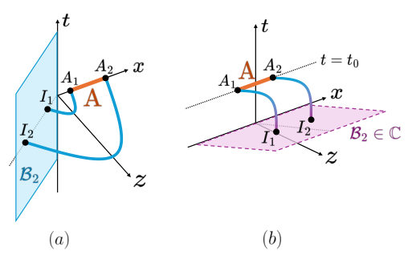
<figcaption class="paper-figure-caption"><b>Fig 1.</b> FIG. 1. Pictorial representation of the disconnected contribu- tion to the entanglement (pseudo) entropy of a spacelike region A = [A1, A2] in the AdS3/BCFT2 correspondence. (a) For a timelike brane, the RT surface (blue) is real and anchored at two points I1, I2 on the real brane B2. (b) When the brane is spacelike, the anchoring points I1, I2 that satisfy the RT condition are complex. As a consequence, the RT surface is complex (purple), yet still anchored at a real boundary.</figcaption>
</figure>
<figure class="paper-figure-card">
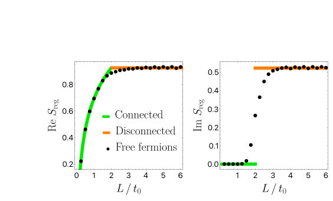
<figcaption class="paper-figure-caption"><b>Fig 2.</b> FIG. 2. The entanglement (pseudo) entropy of a spacelike interval of size L lying on the time-slice t = t0 for the constant- time brane t = 0 in Poincar´e AdS3. We plot the regularized quantity Sreg ≡6</figcaption>
</figure>
<figure class="paper-figure-card">
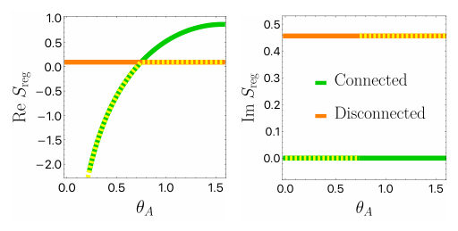
<figcaption class="paper-figure-caption"><b>Fig 3.</b> FIG. 4. Real and imaginary part of the entanglement (pseudo) entropy with a de Sitter brane at finite cutoff as a function of the angular size 2θA of the spacelike boundary region A. The entropy is regularized as Sreg ≡6</figcaption>
</figure>
<figure class="paper-figure-card">
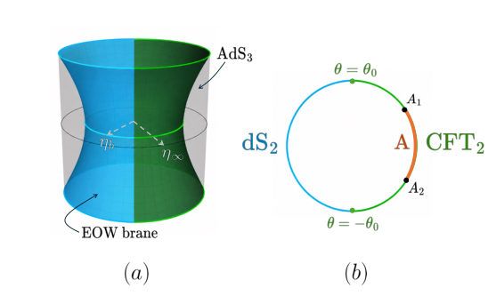
<figcaption class="paper-figure-caption"><b>Fig 4.</b> FIG. 3. Schematic picture of the AdS3/BCFT2 correspondence in presence of a de Sitter brane at finite cutoff. (a) The AdS3 bulk spacetime is sliced in dS2 slices along the η-coordinate, with the asymptotic boundary at η = η∞and the EOW brane at η = ηb. (b) Representation of the constant time-slice where the entangling region A lies. As a consequence of the slicing, the CFT2 is coupled to a dS2 spacetime with dynamical gravity at some value of the angular coordinate θ = ±θ0. The figure is inspired by a similar one appearing in [17].</figcaption>
</figure>
</div>
<p><strong>Summary.</strong> This work extends the holographic description of entanglement entropy to CFTs with boundaries of generic spacetime signature. It demonstrates that achieving consistency requires complexifying the dual bulk spacetime, forcing relevant geometric objects like extremal surfaces to possess complex coordinates. This complexification successfully reproduces known results from boundary quantum field theory calculations.</p>
<p><strong>Why it may be interesting.</strong> The necessity of complexifying the bulk geometry to match boundary quantum field theory results provides a powerful, non-trivial constraint on the holographic duality, suggesting that the mathematical structure of the dual spacetime must be generalized beyond simple Lorentzian signatures.</p>
<details>
<summary>Detailed structure</summary>
<p><strong>Main problem.</strong> The paper addresses the challenge of calculating entanglement entropy in holographic Conformal Field Theories (CFTs) when the boundary conditions are generic, particularly those leading to spacelike boundaries.</p>
<p><strong>Main result.</strong> To maintain consistency with CFT predictions for generic boundaries, the dual bulk spacetime geometry, including the Ryu-Takayanagi surfaces and branes, must be extended into complex coordinates.</p>
<p><strong>Method.</strong> The authors employ the holographic duality (AdS/CFT) framework, calculating entanglement entropy via the area of extremal surfaces (RT formula) and comparing this result to predictions derived from the boundary CFT (e.g., twist operator correlators).</p>
<p><strong>Model / system.</strong> The model involves holographic CFTs dual to gravitational theories, specifically analyzing entanglement entropy in static and time-dependent setups with boundaries of generic spacetime signature, including free Gaussian fermions as a numerical check.</p>
<p><strong>Key observables.</strong> Entanglement Entropy ($S_A$), which is calculated as $\min(	ext{Re } S_{	ext{con}}, 	ext{Re } S_{	ext{dis}})$, and the complex geodesic length ($D_{	ext{disc}}$).</p>
<p><strong>Important parameters / regimes.</strong> The ratio of region size ($L$) to the brane location ($t_0$), and the boundary cutoff $\epsilon$.</p>
<p><strong>Assumptions / limitations.</strong> The standard real Lorentzian AdS/BCFT prescription fails for general causal structures; the selection of the dominant saddle point requires minimizing the <em>real part</em> of the area.</p>
<p><strong>Figures summary.</strong> Figures illustrate the difference between real (timelike) and complex (spacelike) anchoring points for RT surfaces, and plot the regularized entropy showing a phase transition matching Gaussian free fermion results.</p>
<p><strong>Paper structure.</strong> The paper develops the formalism by first noting the failure of real bulk descriptions for spacelike boundaries, then deriving the necessary complex extensions for the RT surfaces and branes, and finally confirming the results by matching the complex geodesic length to known boundary CFT calculations.</p>
</details>
<details>
<summary>Abstract</summary>
<p>Entanglement entropy in holographic conformal field theories with boundaries of generic spacetime signature cannot be described entirely within the standard holographic duality to a real bulk spacetime. We show, both in static and time-dependent setups, that an exact match with the conformal field theory predictions in two boundary dimensions entails an extension of the dual spacetime to complex coordinates. As a consequence, relevant bulk objects such as Ryu-Takayanagi surfaces and branes are in general complex, yet anchored on a real asymptotic boundary preserving the physical meaning of field-theoretical quantities. We also provide a third numerical check of the holographic prediction with a two-dimensional system of free Gaussian fermions exhibiting the same asymptotic regimes across different entanglement phases.</p>
</details>
<p><sub><a href="#top">↑ back to top</a></sub></p>

<p><a id="paper-2609.21536"></a></p>
<h3 id="from-sparse-quantum-computing-data-to-atomistic-simulation-with-universal-machine-learning-interatomic-potentials"><a href="http://arxiv.org/abs/2609.21536v1">From sparse quantum-computing data to atomistic simulation with universal machine-learning interatomic potentials</a></h3>
<p><strong>Authors:</strong> Tuan Minh Do, Yuichiro Yoshida, Kenji Ishihara, Wataru Mizukami<br>
<strong>Type:</strong> theory · <strong>Category:</strong> numerical methods · <strong>PDF:</strong> <a href="https://arxiv.org/pdf/2609.21536v1">https://arxiv.org/pdf/2609.21536v1</a><br>
<strong>Analysis basis:</strong> full PDF text, analyzed in chunks</p>
<div class="figure-strip-hint">↔ Scroll figures horizontally</div>
<div class="paper-figures-scroll">
<figure class="paper-figure-card">
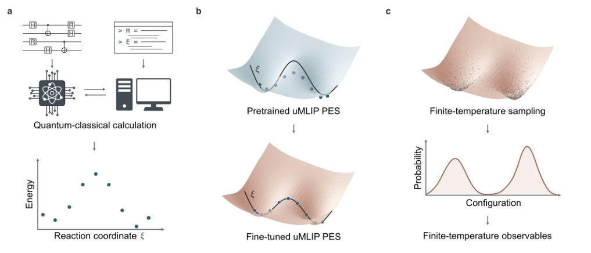
<figcaption class="paper-figure-caption"><b>Fig 1.</b> FIG. 1. Computational workflow for transferring quantum-computing reference energies to finite-temperature atomistic simulations. a, Quantum–classical electronic-structure calculations provide reference energies (blue points) for a small number of configurations along a reaction coordinate ξ. b, These reference energies are used to fine-tune a pretrained universal machine-learning interatomic potential (uMLIP). The energy profile along ξ (black line) illustrates how the potential-energy surface (PES) changes after fine-tuning around the reference configurations. c, The fine-tuned uMLIP is subsequently used to sample an ensemble of configurations (gray points) at finite temperature. The...</figcaption>
</figure>
<figure class="paper-figure-card">
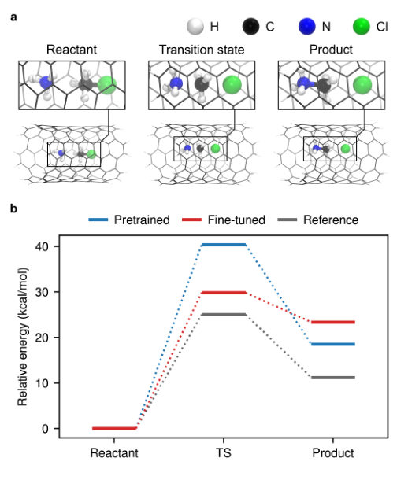
<figcaption class="paper-figure-caption"><b>Fig 2.</b> FIG. 2. Transfer of gas-phase fine-tuning to the confined Men- shutkin reaction. a, Reactant, transition-state, and product struc- tures of the Menshutkin reaction inside a carbon nanotube (CNT), with enlarged views of the reacting species. b, Relative energies of the reactant, transition state (TS), and product obtained with the pretrained and fine-tuned uMLIPs, together with THC-CASPT2 ref- erence values from Ref. [47]. Energies are reported relative to the corresponding reactant. The uMLIP was fine-tuned on quantum- computing-based reference data for the gas-phase Menshutkin reac- tion and evaluated under confinement.</figcaption>
</figure>
<figure class="paper-figure-card">
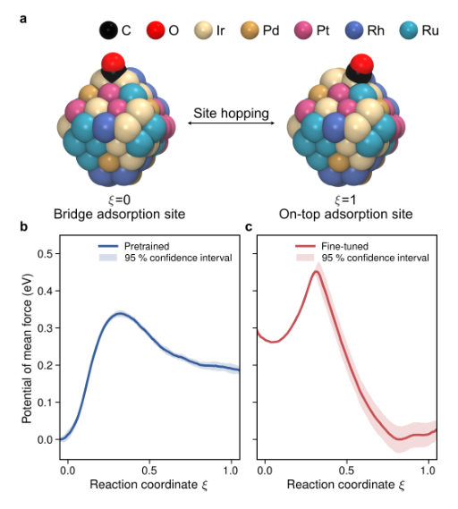
<figcaption class="paper-figure-caption"><b>Fig 3.</b> FIG. 4. Transfer of quantum-computing reference data from a static hopping pathway to a finite-temperature free-energy pro- file on a high-entropy-alloy nanoparticle. a, CO hopping from a bridge adsorption site (ξ = 0) to an on-top adsorption site (ξ = 1) on an IrPdPtRhRu high-entropy-alloy nanoparticle. b, Potential of mean force (PMF) at 300 K obtained from umbrella-sampling simulations using the pretrained uMLIP. c, Corresponding PMF obtained using the uMLIP fine-tuned on the static QSCI-based hopping-energy pro- file. Fine-tuning reverses the relative stability of the two adsorption sites and changes the forward and reverse free-energy barriers. Solid lines show the mean PMFs over five...</figcaption>
</figure>
<figure class="paper-figure-card">
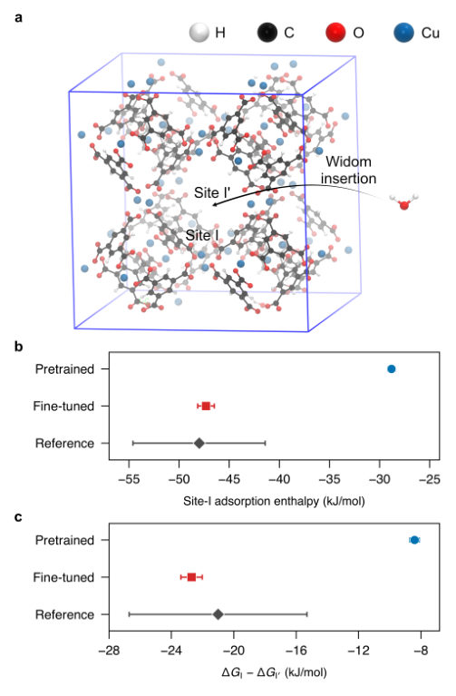
<figcaption class="paper-figure-caption"><b>Fig 4.</b> FIG. 3. Transfer of quantum-computing-based adsorption en- ergetics to adsorption thermodynamics in HKUST-1. a, Widom insertion of water in HKUST-1, highlighting adsorption Sites I and I′. The uMLIP is fine-tuned using quantum-computing-based ref- erence energies along a water–Cu adsorption profile that covers the local environment of Site I and also includes configurations associ- ated with Site I′. b, Site I adsorption enthalpy at 295 K obtained with the pretrained and fine-tuned uMLIPs, compared with the reference value reported in Ref. [49]. c, Free-energy difference between Sites I and I′ at 295 K obtained with the pretrained and fine-tuned uMLIPs and compared with the corresponding...</figcaption>
</figure>
</div>
<p><strong>Summary.</strong> This paper introduces a novel methodology to enhance machine-learning interatomic potentials (uMLIPs) by fine-tuning them with sparse, high-accuracy energy data obtained from quantum computing. The framework is successfully demonstrated across three chemically diverse systems, showing that quantum data can significantly improve the prediction of complex, finite-temperature properties like reaction barriers and adsorption thermodynamics.</p>
<p><strong>Why it may be interesting.</strong> This work directly addresses the computational bottleneck of simulating complex quantum phenomena by creating a robust bridge between highly accurate but sparse quantum calculations and computationally feasible, large-scale molecular dynamics simulations.</p>
<details>
<summary>Detailed structure</summary>
<p><strong>Main problem.</strong> The core problem is developing a practical framework to incorporate sparse, high-accuracy electronic structure data from quantum computing into large-scale, finite-temperature atomistic simulations.</p>
<p><strong>Main result.</strong> The proposed fine-tuning framework successfully transfers quantum-level accuracy to improve predictions of complex, finite-temperature properties for diverse chemical systems.</p>
<p><strong>Method.</strong> The authors fine-tune a pretrained universal Machine-Learning Interatomic Potential (uMLIP) using limited reference energies derived from quantum-computing-based electronic structure calculations.</p>
<p><strong>Model / system.</strong> The framework is tested on three systems: the Menshutkin reaction, water adsorption in the HKUST-1 MOF, and CO hopping on an IrPdPtRhRu high-entropy-alloy nanoparticle.</p>
<p><strong>Key observables.</strong> Transition-state energies, adsorption thermodynamics ($\Delta H_s$, $\Delta G$), and free-energy profiles (PMF) for chemical reactions and adsorption processes.</p>
<p><strong>Important parameters / regimes.</strong> Finite temperature (e.g., 295 K, 300 K), small number of reference configurations (e.g., 14 for HKUST-1), and the use of enhanced-sampling molecular dynamics.</p>
<p><strong>Assumptions / limitations.</strong> The primary assumption is that refining a pretrained uMLIP with sparse, high-fidelity quantum data is sufficient to accurately model complex, thermally sampled configurations.</p>
<p><strong>Figures summary.</strong> Figure 1 illustrates the workflow: quantum-classical calculations provide sparse reference energies to fine-tune a uMLIP, which is then used for finite-temperature sampling. Other figures compare calculated relative energies against high-level reference data.</p>
<p><strong>Paper structure.</strong> The paper introduces the workflow, applies it to three distinct chemical problems (Menshutkin, HKUST-1, HEA), details the fine-tuning process, and presents quantitative results demonstrating improved accuracy in predicting finite-temperature observables.</p>
</details>
<details>
<summary>Abstract</summary>
<p>We propose a framework for incorporating quantum-computing-based electronic-structure calculations into universal machine-learning interatomic potentials (uMLIPs). Rather than constructing an interatomic potential from scratch, we refine a pretrained DFT-based uMLIP using a small set of accurate reference energies obtained from quantum computing. We demonstrate the approach for three chemically distinct applications: the Menshutkin reaction, water adsorption in the metal-organic framework HKUST-1, and CO hopping on a high-entropy-alloy nanoparticle. For the Menshutkin reaction, fine-tuning on gas-phase configurations improves the transition-state energy inside a carbon nanotube but not the product energy. For water adsorption in HKUST-1, fine-tuning with only 14 reference configurations brings adsorption thermodynamics obtained from millions of configurations sampled by Widom insertion into closer agreement with reference values. For CO hopping on an IrPdPtRhRu nanoparticle, the preference for on-top over bridge adsorption is recovered in the finite-temperature free-energy profile obtained from enhanced-sampling molecular dynamics, even though the reference data contain only energies. These results demonstrate that the proposed framework provides a practical route for incorporating quantum-computing calculations into realistic atomistic simulations and that quantum-computing reference data can improve pretrained uMLIPs.</p>
</details>
<p><sub><a href="#top">↑ back to top</a></sub></p>

<p><a id="paper-2609.21115"></a></p>
<h3 id="hybrid-quantum-classical-attention-for-histopathology-based-molecular-profiling-in-data-limited-cancers"><a href="http://arxiv.org/abs/2609.21115v1">Hybrid quantum-classical attention for histopathology-based molecular profiling in data-limited cancers</a></h3>
<p><strong>Authors:</strong> Kahn Rhrissorrakrai, Aritra Bose, Aldo Guzman-Saenz, Filippo Utro, Laxmi Pardia<br>
<strong>Type:</strong> theory · <strong>Category:</strong> other · <strong>PDF:</strong> <a href="https://arxiv.org/pdf/2609.21115v1">https://arxiv.org/pdf/2609.21115v1</a><br>
<strong>Analysis basis:</strong> full PDF text, analyzed in chunks</p>
<div class="figure-strip-hint">↔ Scroll figures horizontally</div>
<div class="paper-figures-scroll">
<figure class="paper-figure-card">
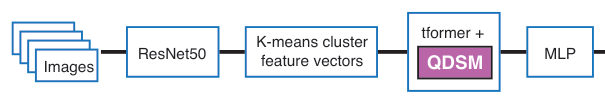
<figcaption class="paper-figure-caption"><b>Fig 1.</b> Figure 1: Quantum-derived doubly stochastic attention integrated into the SEQUOIA histopathology-to-transcriptome workflow. a, Schematic comparison of standard transformer attention and QDSM attention. In a conventional transformer attention head, query and key matrices are used to compute scaled attention scores, which are normalized by a row-wise softmax operation before multiplication with the value matrix. This produces a right-stochastic attention matrix in which each row sums to one. In the QDSM attention head (right), the softmax normalization is replaced by a quantum-derived doubly stochastic matrix generated using the QDSFormer procedure. The resulting attention matrix constrains...</figcaption>
</figure>
<figure class="paper-figure-card">
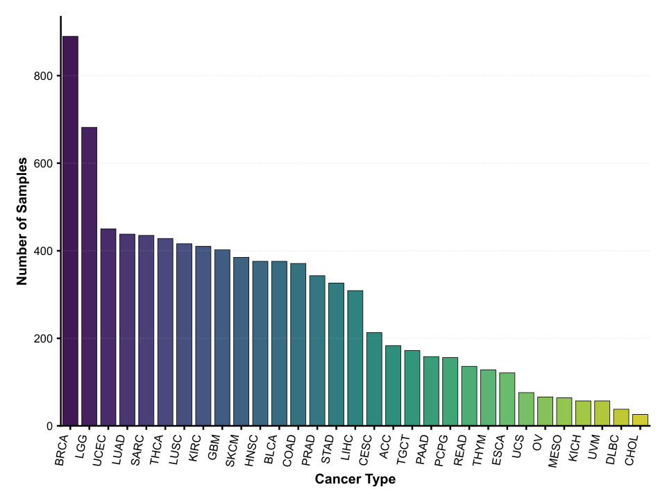
<figcaption class="paper-figure-caption"><b>Fig 2.</b> Figure 2: Number of whole-slide images with matched gene-expression data per cancer type. Shown are the numbers of TCGA samples, defined here as whole-slide histopathology images (WSIs) with matched RNA-seq expression profiles, for cancer types with at least 50 matched WSI– expression pairs. Cancers include: Adrenocortical carcinoma (ACC), Bladder Urothelial Carcinoma (BLCA), Breast invasive carcinoma (BRCA), Cervical squamous cell carcinoma and endocervical adenocarcinoma (CESC), Colon adenocarcinoma (COAD), Esophageal carcinoma (ESCA), Glioblas- toma multiforme (GBM), Head and Neck squamous cell carcinoma (HNSC), Kidney Chromophobe (KICH), Kidney renal clear cell carcinoma (KIRC), Low...</figcaption>
</figure>
<figure class="paper-figure-card">
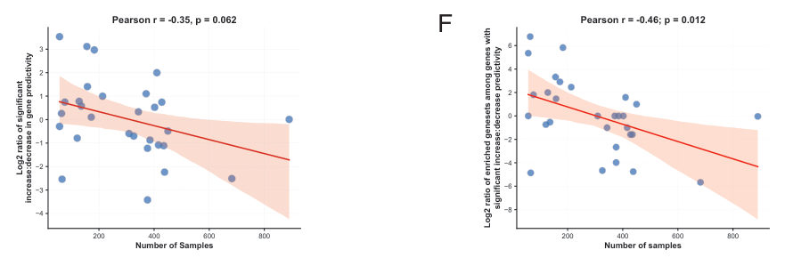
<figcaption class="paper-figure-caption"><b>Fig 3.</b> Figure 3: QDSM attention alters molecular profiling across TCGA cancer types. SEQUOIA ViT models were trained for 200 epochs with either standard softmax attention or QDSM attention in each cancer type with at least 50 samples. Prediction performance was assessed by Pearson correlation between predicted and measured expression across 10 train-test splits. a, Number of genes with significantly improved and significantly worsened prediction under QDSM attention relative to softmax attention. Cancer types with the largest net differences are labeled. b, log2 ratio of genes with significantly improved to significantly worsened prediction. c, Number of enriched gene sets among genes with...</figcaption>
</figure>
<figure class="paper-figure-card">
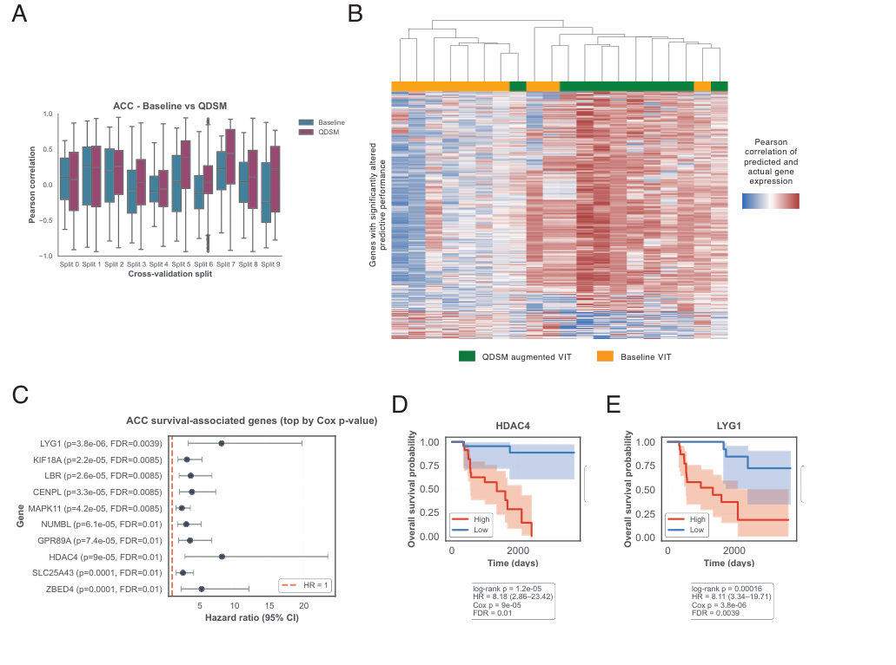
<figcaption class="paper-figure-caption"><b>Fig 4.</b> Figure 4: QDSM attention improves prediction for a subset of genes in ACC. a, Boxplots showing the distribution of gene-level Pearson correlations between predicted and measured expression across 10 train-test splits for baseline SEQUOIA with softmax attention and SEQUOIA with QDSM attention. Higher Pearson correlation values indicate better gene expression prediction. b, Heatmap of Pearson correlation values across train-test splits for genes with significantly altered predictive performance under QDSM attention relative to softmax attention, based on a two-sided t-test with nominal p &lt; 0.05. c, Forest plot of the top survival-associated genes in ACC among genes with improved prediction...</figcaption>
</figure>
<figure class="paper-figure-card">
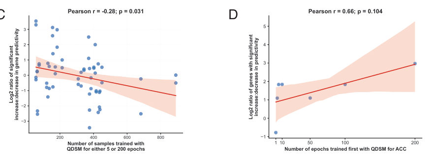
<figcaption class="paper-figure-caption"><b>Fig 5.</b> Figure 5: Performance of mixed QDSM and softmax training. a, Difference in the log2 ratio of genes with significantly improved to significantly worsened prediction between full-QDSM training (200 epochs) and QDSM warm-starting (5 epochs). b, Cohort sample size versus the log2 ratio of significantly improved to significantly worsened genes after 5-epoch QDSM warm-starting, with Pearson correlation and p value reported. c, Cohort sample size versus the log2 ratio of significantly improved to significantly worsened genes across both 5-epoch warm-start and 200-epoch full-QDSM training, with Pearson correlation and p value reported. d, QDSM warm-start duration versus the log2 ratio of...</figcaption>
</figure>
</div>
<p><strong>Summary.</strong> This work proposes a novel hybrid quantum-classical attention mechanism (QDSM) to enhance molecular profiling in cancer using routine histopathology images. By replacing standard attention with a quantum-derived doubly stochastic matrix, the model achieves selective improvements in predicting gene expression, especially in rare or data-limited cancers. This positions QDSM as a context-aware tool for molecular triage when direct genomic testing is impractical.</p>
<p><strong>Why it may be interesting.</strong> While the application is in bioinformatics, the core novelty lies in replacing a standard mathematical function (softmax) with a quantum-derived constraint (doubly stochastic matrix) within a deep learning attention layer, which touches upon quantum information theory applied to classical ML.</p>
<details>
<summary>Detailed structure</summary>
<p><strong>Main problem.</strong> The paper addresses the challenge of performing molecular profiling in cancer when traditional sequencing methods are limited by data scarcity, tissue availability, or cost.</p>
<p><strong>Main result.</strong> A hybrid quantum-classical attention mechanism (QDSM) showed selective, context-dependent gains in predicting gene expression from histopathology images, particularly benefiting smaller, data-limited cancer cohorts.</p>
<p><strong>Method.</strong> The authors developed and tested a transformer model that replaces standard softmax attention with a Quantum-Derived Doubly Stochastic Matrix (QDSM) attention module.</p>
<p><strong>Model / system.</strong> The system uses Whole-Slide Images (WSIs) from histopathology as input to predict gene expression. The core model is a transformer architecture augmented with the QDSM attention mechanism, which constrains attention weights to be doubly stochastic.</p>
<p><strong>Key observables.</strong> Selective gains in predictive accuracy at the gene and pathway level, and the correlation between improved molecular inference and adverse overall survival.</p>
<p><strong>Important parameters / regimes.</strong> The performance gain ($\Delta r_{g,s,c}$) relative to standard softmax attention, and the size of the attention matrix (restricted to $8 	imes 8$ for main TCGA experiments).</p>
<p><strong>Assumptions / limitations.</strong> The primary assumption is that imposing a doubly stochastic constraint on the attention mechanism provides a beneficial, structured alternative to the standard softmax normalization in molecular prediction.</p>
<p><strong>Figures summary.</strong> Figure 1 schematically compares standard transformer attention (right-stochastic) versus the proposed QDSM attention within the SEQUOIA workflow.</p>
<p><strong>Paper structure.</strong> The paper introduces the problem of data-limited molecular profiling, details the hybrid QDSM attention mechanism replacing softmax in a transformer, presents results across multiple cancer cohorts showing selective gains, and discusses the implications for molecular triage.</p>
</details>
<details>
<summary>Abstract</summary>
<p>Molecular profiling from routine histopathology could expand access to precision oncology when sequencing is unavailable, tissue is limited, or training cohorts are small. We developed a hybrid quantum-classical strategy that replaces softmax attention in a transformer for histopathology-based gene expression prediction with a quantum-derived doubly stochastic matrix (QDSM). Across 29 cancer cohorts from The Cancer Genome Atlas and an independent pancreatic cancer cohort from the Clinical Proteomic Tumor Analysis Consortium, QDSM attention produced selective gains, with the largest relative improvements in smaller, data-limited cohorts, including adrenocortical carcinoma and uveal melanoma. Rather than improving transcriptome-wide performance uniformly, QDSM redistributed predictive accuracy across genes and pathways, improving biologically relevant targets in some tumor contexts while worsening others. In adrenocortical carcinoma, preferentially improved genes were enriched for adverse overall-survival associations, linking enhanced molecular inference to prognostically relevant biology. In pancreatic cancer transfer experiments, QDSM improved selected metabolic and lineage-associated genes but did not consistently improve performance under cross-cohort shift. Leave-one-cancer-out mixed-effects analysis showed that baseline molecular features predicted part of the gene-level benefit, while residuals identified cancer-specific programs that improved more or less than expected. Separate experiments on IBM quantum processors recovered the doubly stochastic matrix primitive underlying the attention mechanism. These findings position QDSM attention as a context- and target-dependent strategy for image-based molecular profiling and molecular triage when direct testing is unavailable, incomplete, or impractical.</p>
</details>
<p><sub><a href="#top">↑ back to top</a></sub></p>

<p><a id="paper-2609.20987"></a></p>
<h3 id="isometry-groups-of-right-invariant-metrics-in-geometric-quantum-complexity"><a href="http://arxiv.org/abs/2609.20987v1">Isometry Groups of Right Invariant Metrics in Geometric Quantum Complexity</a></h3>
<p><strong>Authors:</strong> Xiaobo Liu, Lei Zheng<br>
<strong>Type:</strong> theory · <strong>Category:</strong> quantum information and computing · <strong>PDF:</strong> <a href="https://arxiv.org/pdf/2609.20987v1">https://arxiv.org/pdf/2609.20987v1</a><br>
<strong>Analysis basis:</strong> full PDF text, analyzed in chunks</p>
<div class="figure-strip-hint">↔ Scroll figures horizontally</div>
<div class="paper-figures-scroll">
<figure class="paper-figure-card">
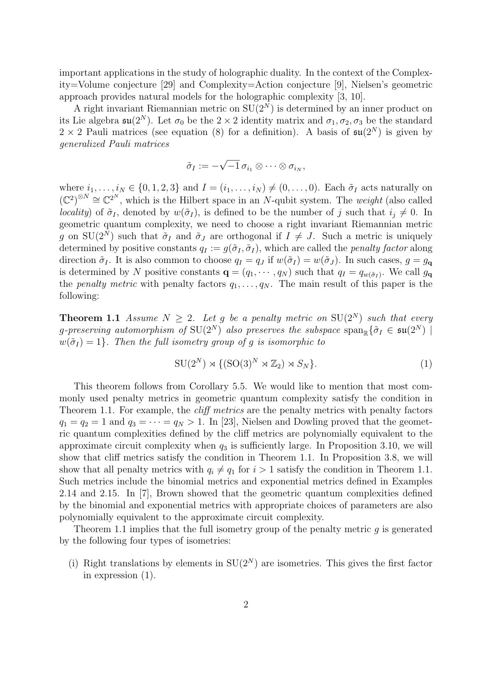
<figcaption class="paper-figure-caption"><b>Fig 1.</b> Low-resolution page preview, page 2</figcaption>
</figure>
<figure class="paper-figure-card">
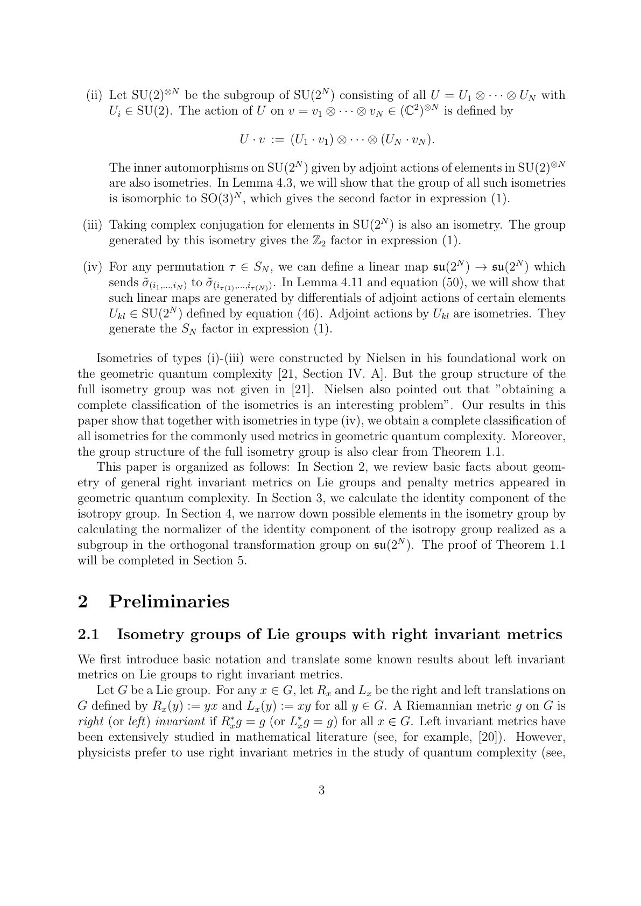
<figcaption class="paper-figure-caption"><b>Fig 2.</b> Low-resolution page preview, page 3</figcaption>
</figure>
<figure class="paper-figure-card">
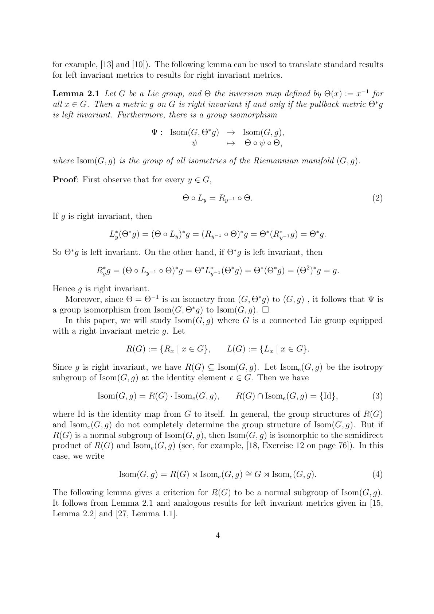
<figcaption class="paper-figure-caption"><b>Fig 3.</b> Low-resolution page preview, page 4</figcaption>
</figure>
<figure class="paper-figure-card">
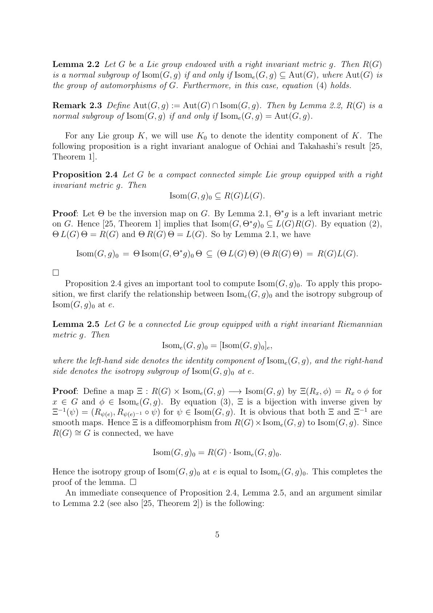
<figcaption class="paper-figure-caption"><b>Fig 4.</b> Low-resolution page preview, page 5</figcaption>
</figure>
<figure class="paper-figure-card">
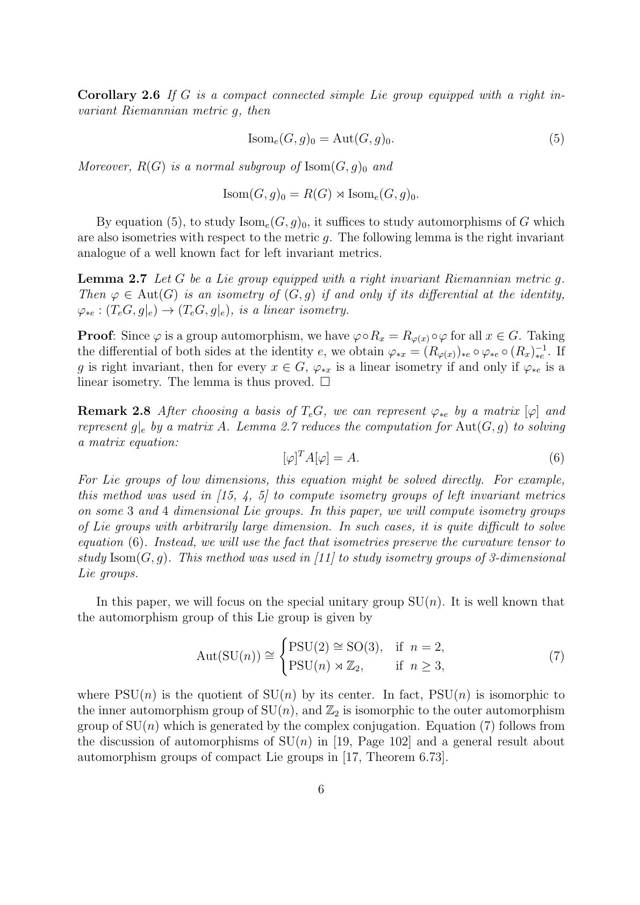
<figcaption class="paper-figure-caption"><b>Fig 5.</b> Low-resolution page preview, page 6</figcaption>
</figure>
</div>
<p><strong>Summary.</strong> This paper provides a complete mathematical description of the isometry groups for specific right-invariant metrics on the special unitary group SU(2^N). By analyzing the symmetries of these metrics, the authors provide deep structural insights into the geometric framework used to define and study quantum computational complexity.</p>
<p><strong>Why it may be interesting.</strong> The geometric approach to quantum complexity is a major theoretical tool. Understanding the symmetries (isometries) of the underlying metric space is fundamental, as these symmetries dictate which transformations preserve the notion of 'distance' or 'complexity' in the quantum computational model.</p>
<details>
<summary>Detailed structure</summary>
<p><strong>Main problem.</strong> The paper determines the full isometry groups of a specific class of right invariant Riemannian metrics defined on the special unitary group SU(2^N). This analysis is crucial for understanding the geometric structure used to define quantum complexity.</p>
<p><strong>Main result.</strong> The full isometry group is found to be isomorphic to a semidirect product involving SU(2N) and components related to permutations and internal symmetries: Isom(G, g) is isomorphic to SU(2N) $
times {(   ext{SO}(3)^N 
times \mathbb{Z}_2) 
times   ext{S}_N}$.</p>
<p><strong>Method.</strong> The authors use techniques from differential geometry on Lie groups, analyzing the structure of the isometry group by examining how potential isometries must preserve the metric and the associated curvature tensor.</p>
<p><strong>Model / system.</strong> The physical system is quantum computation, modeled by unitary operators $U \in 	ext{SU}(2^N)$ acting on $N$ qubits. The complexity is quantified using a right-invariant Riemannian metric, specifically a 'penalty metric' $g_q$, on the group manifold.</p>
<p><strong>Key observables.</strong> Geometric quantum complexity (distance between $U$ and identity), and the structure of the isometry group $    ext{Isom}(G, g)$.</p>
<p><strong>Important parameters / regimes.</strong> The penalty factors $q_I$ defining the metric, and the number of qubits $N$.</p>
<p><strong>Assumptions / limitations.</strong> The analysis is restricted to 'penalty metrics' $g$ on $ ext{SU}(2N)$ that satisfy specific conditions related to the preservation of weight-1 generators.</p>
<p><strong>Paper structure.</strong> The paper builds from general results on isometry groups of right-invariant metrics on Lie groups, applies these tools to the specific case of $   ext{SU}(2N)$ with penalty metrics, and culminates in determining the explicit structure of the isometry group via analysis of the differential action on the Lie algebra.</p>
</details>
<details>
<summary>Abstract</summary>
<p>In this paper, we give a complete description for the full isometry groups of a class of right invariant Riemannian metrics on the special unitary group $\mathrm{SU}(2^N)$. These metrics have been used by physicists to study Nielsen's geometric approach for complexities in quantum computations.</p>
</details>
<p><sub><a href="#top">↑ back to top</a></sub></p>

<p><a id="paper-2609.21506"></a></p>
<h3 id="mechanical-activation-of-terahertz-tunneling-in-metallic-nanogaps"><a href="http://arxiv.org/abs/2609.21506v1">Mechanical Activation of Terahertz Tunneling in Metallic Nanogaps</a></h3>
<p><strong>Authors:</strong> Dasom Kim, Dukhyung Lee, Young-Mi Bahk, Dai-Sik Kim<br>
<strong>Type:</strong> both · <strong>Category:</strong> other · <strong>PDF:</strong> <a href="https://arxiv.org/pdf/2609.21506v1">https://arxiv.org/pdf/2609.21506v1</a><br>
<strong>Analysis basis:</strong> full PDF text, analyzed in chunks</p>
<div class="figure-strip-hint">↔ Scroll figures horizontally</div>
<div class="paper-figures-scroll">
<figure class="paper-figure-card">
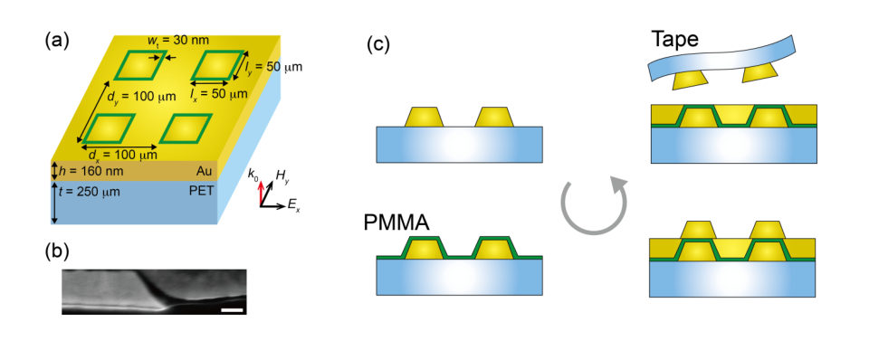
<figcaption class="paper-figure-caption"><b>Fig 1.</b> Figure 1: Fabrication and geometry of the flexible nanogap metasurface. (a) Schematic of the metasurface consisting of square-ring Au nanogaps patterned on a 250-µm-thick polyethylene terephthalate (PET) sub- strate. The slot dimensions are lx = ly = 50 µm, the array periods are dx = dy = 100 µm, the gap width is wt = 30 nm, and the Au thickness is h = 160 nm. The incident THz electric field Ex is polarized perpen- dicular to two opposing sides of the squares. (b) The cross-sectional electron micrograph shows the tapered nanogap formed between the adjacent metal surfaces. Scale bar: 100 nm. (c) Schematic illustration of the fabrication procedure. Prepatterned Au structures on PET are...</figcaption>
</figure>
<figure class="paper-figure-card">
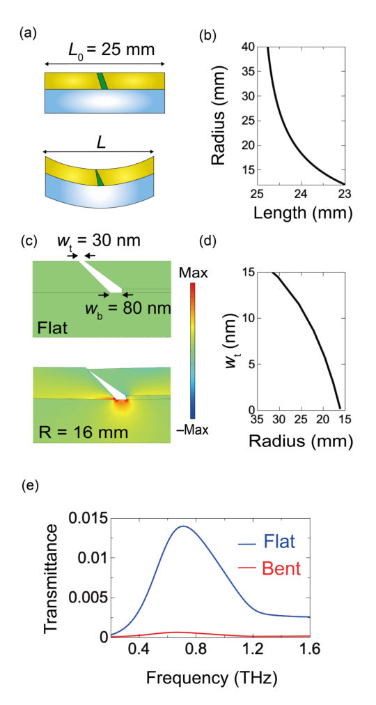
<figcaption class="paper-figure-caption"><b>Fig 2.</b> Figure 2: Mechanical narrowing and low-field THz response of the flexible nanogap metasurface. (a) Cross- sectional schematics of the metasurface in the flat and bent states. L0 = 25 mm and L denote the initial and bent sample lengths, respectively. (b) Bending radius calculated as a function of L. (c) Finite-element structural-mechanics simulations of the nanogap cross section before and after bending, respectively. The color map shows the pressure distribution near the gap. PMMA is omitted from the simulations. (d) Upper- end gap width as a function of bending radius calculated from the simulation. (e) Low-field THz transmission spectra of the metasurface in the flat (blue) and bent (R =...</figcaption>
</figure>
<figure class="paper-figure-card">
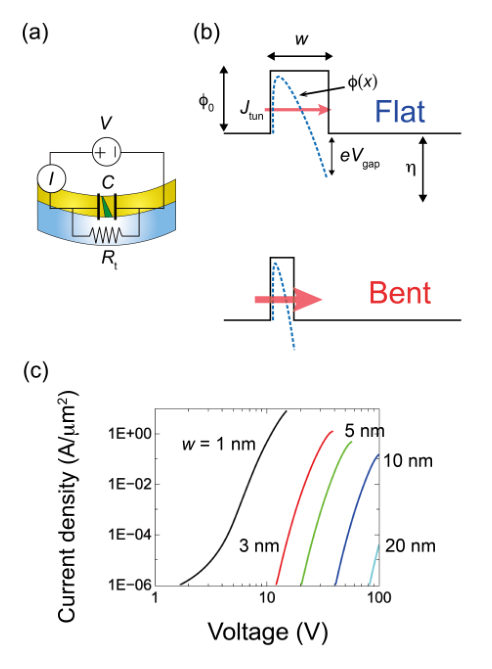
<figcaption class="paper-figure-caption"><b>Fig 3.</b> Figure 3: Calculated tunneling response of a mechanically narrowed Au/PMMA/Au nanogap. (a) Equivalent circuit representation of the bent nanogap, in which the gap capacitance is accompanied by a tunneling conduction channel across the narrowed PMMA barrier. (b) Schematic potential-energy profiles of wide and narrow barriers under an applied gap voltage (dashed lines) and zero bias (solid lines) . Here, ϕ0 = 4.8 eV is the zero-bias barrier height, ϕ(x) is the voltage-dependent barrier profile, eVgap is the energy drop across the junction, η is the Au Fermi energy, and Jtun is the tunneling current density. Barrier narrowing and field-induced tilting increase the electron tunneling...</figcaption>
</figure>
<figure class="paper-figure-card">
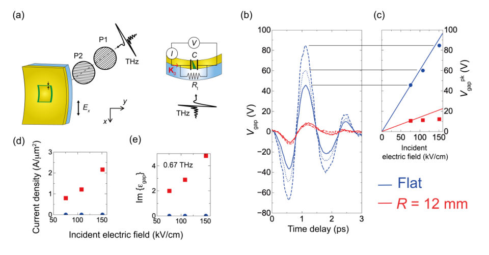
<figcaption class="paper-figure-caption"><b>Fig 4.</b> Figure 4: Gap voltage under high-field THz excitation and estimated tunneling response. (a) Schematic of the high-field THz transmission measurement performed on the mechanically bent nanogap metasurface. The incident THz electric field is polarized perpendicular to the narrowed sides of the nanogaps. (b) Temporal waveforms of the voltage developed across the nanogaps in the flat (blue) and bent (R = 12 mm, red) states at 75 (solid line), 108 (dotted line), and 150 kV/cm (dashed line). (c) Peak gap voltage as a function of the incident electric field strength for the flat and bent states. In the flat state, the gap voltage increases approximately linearly with the incident field, whereas it...</figcaption>
</figure>
<figure class="paper-figure-card">

<figcaption class="paper-figure-caption"><b>Fig 5.</b> Figure 5: Mechanically activated nonlinear THz transmission. (a) THz transmittance spectra of the nanogap metasurface in the flat and bent states, respectively, obtained by Fourier transformation of the time-domain waveforms in Fig. 4 and normalized to the transmittance through a bare PET substrate. The solid, dot- ted, and dashed curves correspond to incident field strengths of 75, 108, and 150 kV/cm, respectively. (b) Normalized resonant transmittance as a function of incident field strength for the flat, intermediately bent (R = 14 mm), and strongly bent (R = 12 mm) configurations, including an additional measurement at 97 kV/cm. For each bending condition, the transmittance is...</figcaption>
</figure>
</div>
<p><strong>Summary.</strong> This work reports on controlling nonlinear THz transmission in flexible metallic nanogaps by physically bending the structure. Bending mechanically narrows the insulating barrier, activating a tunneling conduction channel. This transition shifts the junction's electrical behavior from a linear capacitive response to a nonlinear, tunneling-dominated regime, demonstrating mechanical control over quantum electronic properties.</p>
<p><strong>Why it may be interesting.</strong> The coupling of macroscopic mechanical deformation to ultrafast, nonlinear quantum tunneling phenomena at THz frequencies provides a novel, tunable platform for studying charge transport in nanoscale junctions.</p>
<details>
<summary>Detailed structure</summary>
<p><strong>Main problem.</strong> The paper demonstrates the ability to control nonlinear Terahertz (THz) tunneling-mediated transmission in metallic nanogaps by applying macroscopic mechanical strain.</p>
<p><strong>Main result.</strong> Mechanical bending transitions the junction from a capacitive regime (flat state) to a tunneling-dominated regime (bent state), causing pronounced resonance suppression and voltage saturation.</p>
<p><strong>Method.</strong> The study combines THz time-domain spectroscopy measurements with theoretical modeling using the Simmons tunneling model and structural mechanics simulations.</p>
<p><strong>Model / system.</strong> The system is an Au/PMMA/Au nanogap metasurface fabricated on a flexible PET substrate. The physics involves modeling the junction as a parallel combination of capacitance and field-dependent tunneling conductance.</p>
<p><strong>Key observables.</strong> THz transmittance spectra, gap voltage ($V_{gap}$), tunneling current density ($J_{tun}$), and the imaginary part of the effective dielectric constant ($  ext{Im}{\epsilon_{gap}}$).</p>
<p><strong>Important parameters / regimes.</strong> Gap width (approaching the few-nanometer regime), incident THz field strength (up to 150 kV/cm), and bending curvature/radius.</p>
<p><strong>Assumptions / limitations.</strong> The gap voltage estimation uses an area-averaging approximation based on the Kirchhoff integral formalism, and the local barrier width is approximated as 1 nm for tunneling calculations.</p>
<p><strong>Figures summary.</strong> Figures illustrate the fabrication process, the effect of bending on geometry (structural simulations), and the THz transmittance spectra showing systematic nonlinear suppression in the bent state compared to the flat state.</p>
<p><strong>Paper structure.</strong> The paper establishes the physical system, details the mechanical and electrical characterization methods, presents the comparison between the flat (capacitive) and bent (tunneling) states, and concludes by linking macroscopic mechanical control to ultrafast nanoscale nonlinear THz response.</p>
</details>
<details>
<summary>Abstract</summary>
<p>Metallic nanogaps concentrate terahertz (THz) fields into deep subwavelength volumes and support field-driven electron tunneling when the insulating barrier becomes sufficiently narrow. Here, we demonstrate mechanical control of tunneling-mediated nonlinear THz transmission in a flexible nanogap metasurface. The metasurface consists of Au/PMMA/Au nanogaps fabricated on a polyethylene terephthalate substrate, enabling continuous tuning of the gap geometry through macroscopic bending. In the flat state, the resonant transmission exhibits only a weak dependence on the incident THz field strength. Upon bending, increasing the incident field strength induces pronounced resonance suppression accompanied by saturation of the voltage developed across the nanogaps. This nonlinear response is consistent with the opening of a field-dependent tunneling conduction channel through the mechanically narrowed PMMA barriers. Simmons-model calculations illustrate the strong increase in tunneling current density and the associated dissipative gap response as the local gap width approaches the few-nanometer regime. These results establish mechanical deformation as a macroscopic means of controlling tunneling-mediated THz nonlinearities in flexible metasurfaces.</p>
</details>
<p><sub><a href="#top">↑ back to top</a></sub></p>

<p><a id="paper-2609.21209"></a></p>
<h3 id="multiscale-schmidt-spectrum-bounds-for-high-dimensional-entanglement-geometric-measures-and-schmidt-number-witnesses"><a href="http://arxiv.org/abs/2609.21209v1">Multiscale Schmidt-Spectrum Bounds for High-Dimensional Entanglement: Geometric Measures and Schmidt-Number Witnesses</a></h3>
<p><strong>Authors:</strong> Liang Xiong, Zhixiang Jin, Yanling Wang, Wei Chen, Hong Tao, Nung-sing Sze<br>
<strong>Type:</strong> theory · <strong>Category:</strong> quantum information and computing · <strong>PDF:</strong> <a href="https://arxiv.org/pdf/2609.21209v1">https://arxiv.org/pdf/2609.21209v1</a><br>
<strong>Analysis basis:</strong> full PDF text, analyzed in chunks</p>
<div class="figure-strip-hint">↔ Scroll figures horizontally</div>
<div class="paper-figures-scroll">
<figure class="paper-figure-card">

<figcaption class="paper-figure-caption"><b>Fig 1.</b> FIG. 1. Exact Vidal-tail convex roofs and two fixed-fidelity bounds for the cross-referenced isotropic family. The state is centered on Φ4, while the measured projector is |ϕc⟩⟨ϕc|. The gap to the exact curve shows that this mixed family does not saturate the bound associated with the nonmaximally entangled reference.</figcaption>
</figure>
<figure class="paper-figure-card">

<figcaption class="paper-figure-caption"><b>Fig 2.</b> FIG. 2. Reference-spectrum scan at fixed ρiso 0.98. The ordinate is Rr,ϕ(s)(Fϕ(s)) minus the largest-coefficient lower bound. Nonmonotonicity reflects both retained cumulative informa- tion and loss of threshold violation for highly nonuniform ref- erences.</figcaption>
</figure>
</div>
<p><strong>Summary.</strong> This paper develops advanced multiscale mathematical bounds to quantify high-dimensional bipartite entanglement using the Schmidt spectrum. It connects geometric measures, like nested Vidal tails, to quantitative witnesses for the Schmidt number. The results provide sharp, analytically derived bounds that are essential for characterizing entanglement in complex quantum optical systems.</p>
<p><strong>Why it may be interesting.</strong> This work provides rigorous, quantitative tools (multiscale bounds) to certify entanglement in complex, high-dimensional quantum systems, which is crucial for designing and analyzing photonic quantum communication protocols.</p>
<details>
<summary>Detailed structure</summary>
<p><strong>Main problem.</strong> The paper addresses the challenge of quantifying high-dimensional bipartite entanglement by developing multiscale bounds that connect geometric measures to quantitative Schmidt-number witnesses.</p>
<p><strong>Main result.</strong> They derive sharp upper bounds for the normalized nuclear-norm coordinate based on nested Vidal tails, showing equality holds when the Schmidt spectrum is uniform within defined blocks.</p>
<p><strong>Method.</strong> The methodology involves developing multiscale Schmidt-spectrum bounds, solving relaxed weighted multiscale optimizations globally, and utilizing geometric measures like Vidal tails and convex-roof techniques.</p>
<p><strong>Model / system.</strong> The focus is on bipartite quantum states $
ho$ in high dimensions, relevant for photonic entanglement encoding schemes (e.g., orbital-angular-momentum, path, time-bin).</p>
<p><strong>Key observables.</strong> Schmidt spectrum, Schmidt number ($    ext{SN}(
ho)$), Vidal tails ($  ext{Er}$), Normalized nuclear-norm coordinate, and entanglement measures like Negativity.</p>
<p><strong>Important parameters / regimes.</strong> The number of spectral blocks ($r$), the fidelity parameter, and the unique parameter $\alpha$ governing the optimization.</p>
<p><strong>Assumptions / limitations.</strong> The analysis requires block-resolved or independently certified spectral information for multistep tails, and the single-tail boundary equivalence is limited to single-scale problems.</p>
<p><strong>Figures summary.</strong> Not specified (Notes focus on mathematical derivations and theoretical results rather than figure descriptions).</p>
<p><strong>Paper structure.</strong> The paper builds from defining the problem using Schmidt decomposition and entanglement measures, develops the multiscale bounds using nested Vidal tails, solves the associated global optimization problem, and concludes with refined bounds for mixed states and extensions to incomplete data.</p>
</details>
<details>
<summary>Abstract</summary>
<p>High-dimensional bipartite entanglement depends on how probability is distributed across the Schmidt spectrum, whereas a single reference-state fidelity resolves only one spectral scale. We develop multiscale Schmidt-spectrum bounds that connect geometric measures with quantitative Schmidt-number witnesses. For any partition of a pure-state Schmidt spectrum, several nested Vidal tails determine block masses. We derive the sharp upper boundary of the associated normalized nuclear-norm coordinate and show that equality holds if and only if the spectrum is uniform within each block. Refining the partition gives a monotone hierarchy of tighter bounds whenever the added tail data distinguish unequal block means. We also solve a relaxed weighted multiscale optimization globally: one scalar parameter specifies its unique full-support optimizer and explicit value on the nontrivial branch. Using the established single-tail fidelity--resource curve as a baseline, we obtain exact-fidelity equality refinements, convex-roof lower bounds for mixed states, and quantitative calibrations of Schmidt-number witnesses. A higher-tail relation further bounds convex-roof extended negativity in terms of Vidal tails and identifies the pure-state equality spectra. Leakage-aware and joint-confidence formulations state how these bounds can be used with incomplete data. Multistep tails require block-resolved or independently certified spectral information; they are not determined by one projector expectation.</p>
</details>
<p><sub><a href="#top">↑ back to top</a></sub></p>

<p><a id="paper-2609.21665"></a></p>
<h3 id="orbital-character-and-photoemission-signatures-of-the-a-pocket-in-infinite-layer-nickelates"><a href="http://arxiv.org/abs/2609.21665v1">Orbital character and photoemission signatures of the A-pocket in infinite-layer nickelates</a></h3>
<p><strong>Authors:</strong> Leonard M. Verhoff, Michael Seidl, Liang Si, Karsten Held<br>
<strong>Type:</strong> theory · <strong>Category:</strong> strongly correlated electrons · <strong>PDF:</strong> <a href="https://arxiv.org/pdf/2609.21665v1">https://arxiv.org/pdf/2609.21665v1</a><br>
<strong>Analysis basis:</strong> full PDF text, analyzed in chunks</p>
<div class="figure-strip-hint">↔ Scroll figures horizontally</div>
<div class="paper-figures-scroll">
<figure class="paper-figure-card">

<figcaption class="paper-figure-caption"><b>Fig 1.</b> FIG. 1. DFT bands and projections onto local orbitals for the 11-band Wannier model in the kz = π plane. (a) Full 11-band model. Side panels show DFT-calculated charge density for the A-pocket band at different k-points indicated by arrows. (b) Hopping from Ni-dxz/yz to interstitial-s and Nd-dxy is set to 0 such that the A-pocket does not hybridize with Ni on its way down.</figcaption>
</figure>
<figure class="paper-figure-card">

<figcaption class="paper-figure-caption"><b>Fig 2.</b> FIG. 2. Zoom-in on the A-pocket for (a) 11-band model and (b) artificial model without hybridization of Nd-dxy and interstitial-s to Ni-dxz/yz orbital. The interstitial-s orbital character is shown as the colormap. (c) and (d) Quantitative contribution of relevant atomic orbitals to the A-pocket for the two models of (a) and (b) as a function of energy along the path indicated by gray arrows in (a,b). While the DFT and DMFT-renormalized bands contain Ni-dxz/yz, Nd-dxy, and interstitial-s contributions around EF , the pocket in the artificial model in (b,d) is formed by Nd-dxy and interstitial-s states. In the 10-band model, which excludes the interstitial-s state, the corresponding band...</figcaption>
</figure>
<figure class="paper-figure-card">

<figcaption class="paper-figure-caption"><b>Fig 3.</b> FIG. 3. DFT Fermi surface (blue-dashed lines) for (a) kz = 0 and (b) kz = π. Colormap shows DMFT Fermi surface with correlations renormalizing and smearing the bands. In both cases we have a Ni-dx2−y2 Fermi surface, and a pocket around the Γ- and A-momentum.</figcaption>
</figure>
<figure class="paper-figure-card">

<figcaption class="paper-figure-caption"><b>Fig 4.</b> FIG. 4. Fermi surface maps in the rotated basis at kz = 7π/c. Left: linear vertical, right: linear horizontal polarization. (a) and (b): our simulated ARPES images in the 11-band model. (c) and (d): Experimental images recreated from [9]. (e) and (f): Simulated ARPES images in the 11-band model, with Ms ≡0 artificially enforced. (g)–(i): Matrix elements, includ- ing a top-view of the corresponding Wannier function above the panels. The incident angle is 45°, relevant for the normal component of polarization in LH. White squares indicate the first Brillouin zone, and blue dashed lines are the DFT Fermi contour. Note that in the rotated basis, following the nota- tion of [9], kx and ky are no...</figcaption>
</figure>
<figure class="paper-figure-card">

<figcaption class="paper-figure-caption"><b>Fig 5.</b> FIG. 5. Same as Fig. 4, but measured in the conventional basis in which the Ni–O bonds point along the x- and y- directions.</figcaption>
</figure>
</div>
<p><strong>Summary.</strong> This theoretical study investigates the electronic structure and spectroscopic signatures of the A-pocket in nickelates using DFT+DMFT. The authors conclude that the A-pocket arises from strong hybridization among several orbitals, and critically, that the measured photoemission intensity is primarily governed by the interstitial-$s$ orbital's matrix element, resolving previous ambiguities in the field.</p>
<p><strong>Why it may be interesting.</strong> The detailed analysis of orbital hybridization and the explicit calculation of photoemission matrix elements provide a rigorous theoretical framework for interpreting complex spectroscopic features in strongly correlated transition metal oxides.</p>
<details>
<summary>Detailed structure</summary>
<p><strong>Main problem.</strong> The paper addresses the long-standing debate regarding the orbital character and physical origin of the A-pocket feature in infinite-layer nickelates.</p>
<p><strong>Main result.</strong> The A-pocket is identified as a strongly hybridized state involving interstitial-$s$, $    ext{Nd-}d_{xy}$, and $  ext{Ni-}d_{xz/yz}$ orbitals, with the photoemission signal intensity being dominated by the interstitial-$s$ channel.</p>
<p><strong>Method.</strong> The study employs Density-Functional Theory combined with Dynamical Mean-Field Theory (DMFT) to calculate electronic structure, followed by simulating Angle-Resolved Photoemission Spectroscopy (ARPES) spectra.</p>
<p><strong>Model / system.</strong> The system is infinite-layer nickelates, modeled using a low-energy 11-band tight-binding model incorporating local Hubbard-Kanamori interactions. Calculations are performed for $ ext{NdNiO}_2$ and $ ext{LaNiO}_2$.</p>
<p><strong>Key observables.</strong> Orbital character contributions to the A-pocket, polarization-dependent ARPES spectra, and Fermi surface maps.</p>
<p><strong>Important parameters / regimes.</strong> The hybridization strength between different orbital types (e.g., interstitial-$s$ vs. $d$-orbitals) and the inclusion of local correlations via DMFT.</p>
<p><strong>Assumptions / limitations.</strong> The analysis relies on the Plane-Wave Final-State Approximation (PWA) for ARPES simulations, and the $k_z$ assignment in the final-state model is noted as an approximation.</p>
<p><strong>Figures summary.</strong> Figures illustrate DFT band structures, orbital projections onto the A-pocket, and simulated ARPES Fermi surface contours for different orbital channels and polarizations.</p>
<p><strong>Paper structure.</strong> The paper progresses by first establishing the need to treat orbital hybridizations and photoemission matrix elements together. It then uses a full 11-band model to calculate orbital contributions, contrasting these with artificial, decoupled models to pinpoint the dominant physical mechanism governing the ARPES signal.</p>
</details>
<details>
<summary>Abstract</summary>
<p>The orbital character of the so-called $A$-pocket in infinite-layer nickelates remains under debate. We investigate bulk NdNiO$_2$ using density-functional theory combined with dynamical mean-field theory and identify the $A$-pocket as a strongly hybridized state with substantial interstitial-$s$, Nd-$d_{xy}$ and Ni-d_${xz/yz}$ contributions. Our angle-resolved photoemission spectroscopy simulations reproduce the main polarization-dependent features measured experimentally. Removing the interstitial-$s$ matrix element leads to a clear disagreement with the measured Fermi surface maps, even though the interstitial-$s$ contribution is not dominant. Suppressing instead the Nd-d$_{xy}$ or Ni-$_{dxz/yz}$ matrix elements leaves the maps almost unchanged, because these are small at the zone corner. More generally, our results demonstrate that assigning the microscopic origin of spectral features in infinite-layer nickelates requires treating orbital hybridizations and photoemission matrix elements together.</p>
</details>
<p><sub><a href="#top">↑ back to top</a></sub></p>

<p><a id="paper-2609.21260"></a></p>
<h3 id="pair-density-shannon-information-measures-and-their-math488math-dependent-behaviour-in-diatomic-molecular-systems"><a href="http://arxiv.org/abs/2609.21260v1">Pair density Shannon information measures and their $N$-dependent behaviour in diatomic molecular systems</a></h3>
<p><strong>Authors:</strong> Saul J. C. Salazar, J. Antonio Zarate, J. M. Solano-Altamirano, Humberto G. Laguna, Julio M. Hernandez-Perez, Robin P. Sagar<br>
<strong>Type:</strong> theory · <strong>Category:</strong> other · <strong>PDF:</strong> <a href="https://arxiv.org/pdf/2609.21260v1">https://arxiv.org/pdf/2609.21260v1</a><br>
<strong>Analysis basis:</strong> full PDF text, analyzed in chunks</p>
<div class="figure-strip-hint">↔ Scroll figures horizontally</div>
<div class="paper-figures-scroll">
<figure class="paper-figure-card">

<figcaption class="paper-figure-caption"><b>Fig 1.</b> Figure 1: Shannon entropy sums St (first row), ST (second row) and IT (third row) as a function</figcaption>
</figure>
<figure class="paper-figure-card">

<figcaption class="paper-figure-caption"><b>Fig 2.</b> Figure 2: The azimuthally symmetric upper half of the domain (denoted Σu 2v) is mapped using</figcaption>
</figure>
<figure class="paper-figure-card">

<figcaption class="paper-figure-caption"><b>Fig 3.</b> Figure 3: The upper core part of the integration domain (denoted as Σu 2c in the text), and its</figcaption>
</figure>
<figure class="paper-figure-card">

<figcaption class="paper-figure-caption"><b>Fig 4.</b> Figure 4: Shannon entropy sums St (first row), ST (second row) and IT (third row) as a function</figcaption>
</figure>
<figure class="paper-figure-card">

<figcaption class="paper-figure-caption"><b>Fig 5.</b> Figure 5: Shannon entropy sums St (first row), ST (second row) and IT (third row) as a</figcaption>
</figure>
</div>
<p><strong>Summary.</strong> This paper applies information theory, specifically Shannon entropy and mutual information, to analyze the pair density properties of diatomic molecules using Hartree-Fock theory. The authors examine how these measures change with system size ($N$) and find evidence for universal scaling laws. This work provides a quantitative, information-theoretic characterization of molecular bonding and correlation.</p>
<p><strong>Why it may be interesting.</strong> The use of information-theoretic measures like entropy and mutual information to characterize molecular structure and correlation provides a novel, quantitative lens through which to view electronic structure, which is highly relevant to understanding quantum correlations in molecular physics.</p>
<details>
<summary>Detailed structure</summary>
<p><strong>Main problem.</strong> The study investigates pair density Shannon information measures and their dependence on system size ($N$) in diatomic molecules.</p>
<p><strong>Main result.</strong> The analysis suggests a potential universal $N$-dependent behavior for the entropy sums, and it finds that momentum space pair density is closer to the Hartree-like reference than position space.</p>
<p><strong>Method.</strong> Calculations utilize Hartree-Fock wave functions to compute pair density Shannon entropies and mutual information in both position and momentum space.</p>
<p><strong>Model / system.</strong> The physical systems studied are homonuclear and heteronuclear diatomic molecules. The calculations are performed using the Hartree-Fock approximation.</p>
<p><strong>Key observables.</strong> Pair density Shannon entropies ($S_\Gamma, S_\Pi, S_T$) and mutual information ($I_r, I_p$).</p>
<p><strong>Important parameters / regimes.</strong> System size ($N$), basis set quality, and the comparison between position and momentum space representations.</p>
<p><strong>Assumptions / limitations.</strong> The analysis is based on Hartree-Fock wave functions, and the study focuses on entropy sums derived from entropic uncertainty relations.</p>
<p><strong>Figures summary.</strong> Figures show Shannon entropy sums ($S_t, S_T, I_T$) for neutral and heteronuclear diatomic molecules as a function of $N$, comparing theoretical models to basis set data.</p>
<p><strong>Paper structure.</strong> The paper develops the theoretical framework using Shannon entropy definitions for reduced and pair densities, calculates these measures for diatomic systems in both position and momentum space, and finally examines the $N$-dependent behavior by fitting the data to various theoretical models.</p>
</details>
<details>
<summary>Abstract</summary>
<p>Pair density Shannon entropies and mutual information in position and in momentum space are calculated for two series of homonuclear and heteronuclear diatomic molecules using Hartree-Fock wave functions. The pair density entropy sum increases with the quality of the basis set. Mutual information, a measure of statistical correlation, is seen to be smaller in momentum space as compared to position space. The interpretation is that the momentum pair density is closer than the position pair density to a Hartree-like reference. The $N$-dependent behaviours of the entropy and mutual information sums are examined by fitting the data to three different model behaviours. Results show that these models are capable of representing the molecular data in differing degrees. The parameters obtained from a particular model are relatively constant across different chemical series. This adds evidence to the argument of a universal $N$-dependent behaviour of the entropy sums.</p>
</details>
<p><sub><a href="#top">↑ back to top</a></sub></p>

<p><a id="paper-2609.21558"></a></p>
<h3 id="quantum-states-with-the-same-entanglement-and-local-unitary-equivalence"><a href="http://arxiv.org/abs/2609.21558v1">Quantum states with the same entanglement and local unitary equivalence</a></h3>
<p><strong>Authors:</strong> Julio I. de Vicente<br>
<strong>Type:</strong> theory · <strong>Category:</strong> quantum information and computing · <strong>PDF:</strong> <a href="https://arxiv.org/pdf/2609.21558v1">https://arxiv.org/pdf/2609.21558v1</a><br>
<strong>Analysis basis:</strong> full PDF text, analyzed in chunks</p>
<div class="figure-strip-hint">↔ Scroll figures horizontally</div>
<div class="paper-figures-scroll">
<figure class="paper-figure-card">

<figcaption class="paper-figure-caption"><b>Fig 1.</b> Low-resolution page preview, page 2</figcaption>
</figure>
<figure class="paper-figure-card">

<figcaption class="paper-figure-caption"><b>Fig 2.</b> Low-resolution page preview, page 3</figcaption>
</figure>
<figure class="paper-figure-card">

<figcaption class="paper-figure-caption"><b>Fig 3.</b> Low-resolution page preview, page 4</figcaption>
</figure>
<figure class="paper-figure-card">

<figcaption class="paper-figure-caption"><b>Fig 4.</b> Low-resolution page preview, page 5</figcaption>
</figure>
<figure class="paper-figure-card">

<figcaption class="paper-figure-caption"><b>Fig 5.</b> Low-resolution page preview, page 6</figcaption>
</figure>
</div>
<p><strong>Summary.</strong> This paper tackles the relationship between two notions of state equivalence: LOCC-interconvertibility and Local Unitary (LU) equivalence. It proves that for highly entangled multipartite states (those with full entanglement dimensionality), these two concepts coincide. This provides a powerful, sufficient condition for when operational indistinguishability implies a simpler, unitary-based equivalence.</p>
<p><strong>Why it may be interesting.</strong> This work provides a rigorous mathematical criterion (full entanglement dimensionality) that simplifies the complex operational question of entanglement equivalence, which is crucial for understanding resource theories in quantum information.</p>
<details>
<summary>Detailed structure</summary>
<p><strong>Main problem.</strong> The paper investigates the conditions under which LOCC-interconvertibility of quantum states implies Local Unitary (LU) equivalence, as this implication is not generally true.</p>
<p><strong>Main result.</strong> For multipartite quantum states that possess full entanglement dimensionality (quantified by the Schmidt number vector), LOCC interconvertibility is proven to be equivalent to LU-equivalence.</p>
<p><strong>Method.</strong> The proof strategy involves using properties of entanglement measures (like entropy) and contradiction, showing that if the states are interconvertible but not LU-equivalent, an inequality must arise contradicting the assumed equality of entanglement measures.</p>
<p><strong>Model / system.</strong> The study focuses on multipartite quantum systems ($
ho \in \mathcal{D}_n(d)$) involving $n$ parties, each with local dimension $d \ge 2$. The analysis uses density matrices and concepts derived from entanglement theory.</p>
<p><strong>Key observables.</strong> Entanglement of Formation, Schmidt number vector (SNV), and various entanglement entropy measures ($E_j$).</p>
<p><strong>Important parameters / regimes.</strong> The condition of 'full entanglement dimensionality' ($  ext{SNV}(
ho) = (d, \dots, d)$) is the critical parameter regime where the equivalence holds.</p>
<p><strong>Assumptions / limitations.</strong> The main result is conditional on the states having full entanglement dimensionality; the general case for mixed states remains open.</p>
<p><strong>Figures summary.</strong> Not specified.</p>
<p><strong>Paper structure.</strong> The paper establishes the known implication (LU $\implies$ LOCC) and then focuses on finding sufficient conditions for the converse (LOCC $\implies$ LU). The core result is presented in Section IV, proving equivalence under the full entanglement dimensionality condition.</p>
</details>
<details>
<summary>Abstract</summary>
<p>Local operations assisted by classical communication (LOCC) play a fundamental role in the resource-theoretic formulation of entanglement theory inducing an operationally meaningful ordering in the set of entangled states. The particular class within LOCC of local unitary (LU) transformations is obviously closed under inversion. Thus, LU-equivalent states are interconvertible by LOCC and have therefore the same entanglement. For this reason LU-equivalence has been thoroughly studied in the context of entanglement theory. However, as I note here with a simple example, the converse is not true: there exist entangled states that are interconvertible by LOCC but which are not LU-equivalent. This motivates studying under which conditions LOCC interconvertibility is characterized by LU-equivalence. I provide a sufficient condition for this to hold. When one considers multipartite states with full entanglement dimensionality (as quantified by the Schmidt number vector) LOCC interconvertibility can only hold under LU-equivalence.</p>
</details>
<p><sub><a href="#top">↑ back to top</a></sub></p>

<p><a id="paper-2609.21152"></a></p>
<h3 id="refine-scheduling-of-distillation-and-coding-for-rate-fidelity-tradeoff-in-quantum-networks"><a href="http://arxiv.org/abs/2609.21152v1">ReFINE: Scheduling of Distillation and Coding for Rate-Fidelity Tradeoff in Quantum Networks</a></h3>
<p><strong>Authors:</strong> Narges Alavisamani, Matthieu Bloch, Moinuddin Qureshi<br>
<strong>Type:</strong> theory · <strong>Category:</strong> quantum information and computing · <strong>PDF:</strong> <a href="https://arxiv.org/pdf/2609.21152v1">https://arxiv.org/pdf/2609.21152v1</a><br>
<strong>Analysis basis:</strong> full PDF text, analyzed in chunks</p>
<div class="figure-strip-hint">↔ Scroll figures horizontally</div>
<div class="paper-figures-scroll">
<figure class="paper-figure-card">

<figcaption class="paper-figure-caption"><b>Fig 1.</b> Fig. 1. (a) Entanglement distribution: Sender generates an EPR pair, sends one qubit of the pair to Receiver. Errors reduce EPR pair’s fidelity. (b) As decoherence reduces fidelity, CED attempts to restore it, but frequent distillation rounds increase failure rates. (c) Depending on when consumption requests arrive, the utility of CEM varies. (d) ReFINE schedules limited distillation rounds, preservation in CEM (only if needed), and serves requests preemptively.</figcaption>
</figure>
<figure class="paper-figure-card">

<figcaption class="paper-figure-caption"><b>Fig 2.</b> Fig. 3. (a) Entanglement Distillation. Equal results of measurement of |A1A2⟩: success, improved fidelity of |T1T2⟩. Unequal results: failure, corruption of both |A1A2⟩and |T1T2⟩. (b) Fidelity and success probability across distillation rounds.</figcaption>
</figure>
<figure class="paper-figure-card">

<figcaption class="paper-figure-caption"><b>Fig 3.</b> Fig. 4. Static vs. Preemptive Scheduling. Unlike Static policies, preemptive demand-aware scheduling adapts distillation/CEM order and serves requests at any stage.</figcaption>
</figure>
<figure class="paper-figure-card">

<figcaption class="paper-figure-caption"><b>Fig 4.</b> Figure 5 illustrates the rate-fidelity tradeoff in quantum networks. Prior static policies achieve suboptimal tradeoffs due to fixed sequences and resource allocation that ignores network demand. The timing interactions between distillation and CEM formation mean that simply increasing resources does not guarantee better performance. Ideally, we aim for unit service rate and fidelity, but theoretical limits in current distillation protocols make perfect fidelity and rate practically unattainable (gray area in Figure 5). Nonetheless, there exists a gap between prior work and the best achievable case (green area in Figure 5). Our objective is to close this gap and enable a bet- ter balance...</figcaption>
</figure>
<figure class="paper-figure-card">

<figcaption class="paper-figure-caption"><b>Fig 5.</b> Fig. 5. The rate-fidelity tradeoff in quantum networks. There exists a gap (green area) between prior work and theoretical best achievable service rate and fidelity.</figcaption>
</figure>
</div>
<p><strong>Summary.</strong> This paper introduces ReFINE, a novel, demand-aware scheduler designed to optimize the trade-off between fidelity and service rate in quantum networks. It dynamically manages the use of entanglement distillation and error correction memory (CEM) based on real-time network demands. By implementing three distinct scheduling policies, ReFINE significantly improves resource utilization compared to fixed, static protocols.</p>
<p><strong>Why it may be interesting.</strong> It provides a sophisticated resource management framework for quantum communication channels, which is crucial for scaling quantum networks by optimizing the use of fragile quantum resources like entanglement.</p>
<details>
<summary>Detailed structure</summary>
<p><strong>Main problem.</strong> The paper addresses the challenge of optimizing the trade-off between maintaining high fidelity and achieving a high service rate for shared Einstein-Podolsky-Rosen (EPR) pairs in quantum networks.</p>
<p><strong>Main result.</strong> The proposed ReFINE scheduler significantly outperforms static scheduling methods by dynamically managing resource allocation, closing substantial gaps in both fidelity and service rate compared to existing protocols.</p>
<p><strong>Method.</strong> ReFINE is a demand-aware, preemptive scheduler that intelligently decides whether to immediately use an available EPR pair or preserve it in a Coding-Enhanced Memory (CEM), implementing three distinct priority policies (ReFINE-D, ReFINE-M, ReFINE-C).</p>
<p><strong>Model / system.</strong> The system modeled is a quantum network where nodes share EPR pairs, which degrade due to decoherence. The core components managed are entanglement distillation (to boost fidelity) and Quantum Error Correction (QEC) via CEM (to protect pairs over time).</p>
<p><strong>Key observables.</strong> Fidelity of EPR pairs, Service Rate (rate of successful pair delivery), and the rate-fidelity tradeoff curve.</p>
<p><strong>Important parameters / regimes.</strong> The scheduling policies (D, M, C) dictate the balance between prioritizing rate (Distillation-First) or fidelity (Memory-First).</p>
<p><strong>Assumptions / limitations.</strong> Existing methods often rely on static combinations of distillation and CEM, failing to account for dynamic variations in network demand.</p>
<p><strong>Figures summary.</strong> Figures illustrate the basic entanglement distribution process, the limitations of continuous distillation (CED), the utility of CEM based on timing, and a comparison showing ReFINE's superior preemptive scheduling capability over static approaches.</p>
<p><strong>Paper structure.</strong> The paper introduces the resource management problem, details the limitations of static protocols, proposes the ReFINE scheduler with its three policies, and presents quantitative results demonstrating its superior performance across various metrics.</p>
</details>
<details>
<summary>Abstract</summary>
<p>In quantum networks, nodes are connected via sharing of Einstein-Podolsky-Rosen (EPR) pairs, ideally with high fidelity and high rate. However, the fidelity of EPR pairs degrades due to imperfect generation and decoherence errors. Entanglement Distillation is a method that increases the fidelity but operates probabilistically and may destroy all involved EPR pairs upon failure. This failure reduces available EPR pairs for application use, thereby decreasing the service rate. Quantum Error Correction (QEC) is another mechanism to protect EPR pairs against error by forming what we term as Coding-Enhanced Memory (CEM). While effective, CEM requires extra time and resources to form the code, which also reduces the service rate. Existing methods often use static combinations of distillation and CEM, ignoring demand variations. This results in a low service rate without significant fidelity gain. Limited resources together with this rate-fidelity tradeoff make it essential to schedule when to run distillation, form CEM, or serve requests.   We propose ReFINE, a demand-aware preemptive scheduler that based on application requirements either serves an available EPR pair immediately or preserves it in CEM. This selective use of CEM, only when needed, enables a better balance for rate-fidelity tradeoff than always using CEM. Between request arrivals, ReFINE either schedules distilling EPR pairs or forming CEM to protect distilled pairs, following one of the three priority policies: ReFINE-D (Distillation-First) first generates EPR pairs for distillation and then forms the CEM, prioritizing service rate. ReFINE-M (Memory-First) first forms the CEM, then generates the EPR pairs for distillation, prioritizing fidelity. ReFINE-C (Concurrent) performs both distillation and CEM formation concurrently, balancing between fidelity and service rate.</p>
</details>
<p><sub><a href="#top">↑ back to top</a></sub></p>

<p><a id="paper-2609.21631"></a></p>
<h3 id="reformulating-pfaffian-quantum-monte-carlo-with-the-hybrid-monte-carlo-formalism"><a href="http://arxiv.org/abs/2609.21631v1">Reformulating Pfaffian Quantum Monte Carlo with the Hybrid Monte Carlo formalism</a></h3>
<p><strong>Authors:</strong> Thomas Hauschild, Lin Wang, Finn L. Temmen, Thomas Luu<br>
<strong>Type:</strong> theory · <strong>Category:</strong> strongly correlated electrons · <strong>PDF:</strong> <a href="https://arxiv.org/pdf/2609.21631v1">https://arxiv.org/pdf/2609.21631v1</a><br>
<strong>Analysis basis:</strong> full PDF text, analyzed in chunks</p>
<div class="figure-strip-hint">↔ Scroll figures horizontally</div>
<div class="paper-figures-scroll">
<figure class="paper-figure-card">

<figcaption class="paper-figure-caption"><b>Fig 1.</b> Figure 1: Comparison of PfQMC and ED results for the unequal-time Dirac correlators 𝐶𝑖𝑗(𝜏) = ⟨𝑐𝑖(𝜏)𝑐† 𝑗(0)⟩in an interacting Kitaev chain with 𝐿= 4 and inverse temperature 𝛽= 5. The model pa- rameters are 𝜇= 0, Δ = 1, 𝑉= 1, and 𝑡= 1. The PfQMC parameters are 𝑁𝜏= 20, Δ𝜏= 0.25, 𝑁MD = 7, 𝑡MD = 0.8, and 𝑁cut = 5.</figcaption>
</figure>
<figure class="paper-figure-card">

<figcaption class="paper-figure-caption"><b>Fig 2.</b> Figure 2: Runtime as a function of the number of time slices (left) and the system size (right). The parameters are 𝜇= 0.0, Δ = 1, 𝑡= 1, 𝑉= 1, 𝑡MD = 0.8, 𝑁MD = 7, 𝑁cut = 5, and 500 configurations. When varying the number of time slices, 𝛽= 5, Δ𝜏= 𝛽/𝑁𝜏, and 𝐿= 6. When varying the system size, 𝑁𝜏= 10 and Δ𝜏= 0.3, so that 𝛽= 3. The reference scalings have arbitrary coefficients.</figcaption>
</figure>
<figure class="paper-figure-card">

<figcaption class="paper-figure-caption"><b>Fig 3.</b> Figure 3: Acceptance rate as a function of the gradient-expansion truncation order 𝑁cut. The parameters are 𝐿= 20, 𝑡= 1, 𝑉= 1, Δ = 1, Δ𝜏= 0.25, 𝑁𝜏= 40, 𝛽= 10, 𝜇= 0, 𝑡MD = 0.9, and 𝑁MD = 20. Each simulation contains 600 configurations.</figcaption>
</figure>
<figure class="paper-figure-card">

<figcaption class="paper-figure-caption"><b>Fig 4.</b> Figure 4: Unequal-time Majorana correlators ⟨𝛾𝑖(𝜏)𝛾𝑖(0)⟩in the eigenbasis of the non-interacting 𝐴kernel for a selection of modes. Excitation energies are encoded in the decay rates and can be extracted from the slopes on the logarithmic scale. The parameters are 𝐿= 14, 𝑡= 1, 𝑉= 0.2, Δ = 0.8, Δ𝜏= 0.3, 𝑁𝜏= 25, 𝑁MD = 9, 𝑡MD = 0.8, and 𝑁cut = 5, with 2000 configurations.</figcaption>
</figure>
<figure class="paper-figure-card">

<figcaption class="paper-figure-caption"><b>Fig 5.</b> Figure 5: Unnormalized localization profiles for several chemical potentials. The parameters are 𝐿= 14, 𝑡= 1, 𝑉= 0.2, Δ = 0.8, Δ𝜏= 0.3, 𝑁cut = 5, 𝑁𝜏= 25, and 𝑡MD = 0.8. For panels (a), (b), and (d), 𝑁MD = 9; for panel (c), 𝑁MD = 25. Error bars are mostly obscured by data markers.</figcaption>
</figure>
</div>
<p><strong>Summary.</strong> This work introduces a novel combination of Pfaffian Quantum Monte Carlo (PfQMC) with the Hybrid Monte Carlo (HMC) formalism to efficiently simulate anomalous fermionic Hamiltonians. By simplifying the force calculation based on the Pfaffian weight's determinant representation, the method achieves favorable computational scaling. It is successfully applied to the interacting Kitaev chain, confirming its ability to resolve low-energy topological features.</p>
<p><strong>Why it may be interesting.</strong> The development of an efficient, globally updated sampling technique (HMC) for Pfaffian QMC is crucial for studying complex pairing mechanisms and topological phases in strongly correlated electron systems that are difficult for standard determinant methods.</p>
<details>
<summary>Detailed structure</summary>
<p><strong>Main problem.</strong> The paper addresses the challenge of extending Pfaffian Quantum Monte Carlo (PfQMC) to incorporate the global updates provided by the Hybrid Monte Carlo (HMC) formalism for simulating anomalous fermionic Hamiltonians.</p>
<p><strong>Main result.</strong> The authors successfully combine PfQMC with HMC, achieving a computational scaling of O(N_tau L^3) and validating the method on the interacting Kitaev chain, where results agree with exact diagonalization.</p>
<p><strong>Method.</strong> They utilize the HMC framework, noting that the molecular dynamics force depends only on the magnitude of the Pfaffian weight, which simplifies the force calculation significantly.</p>
<p><strong>Model / system.</strong> The primary model studied is the interacting Kitaev chain, a 1D system of spinless fermions characterized by nearest-neighbor hopping, p-wave pairing, and density interactions. The Hamiltonian includes terms for hopping, pairing, and density-density interactions.</p>
<p><strong>Key observables.</strong> Unequal-time Majorana correlators, low-energy excitation modes, and the computational scaling of the simulation time.</p>
<p><strong>Important parameters / regimes.</strong> The simulation is applied to the Kitaev chain, with key parameters including the hopping term (t), pairing term (Delta), chemical potential (mu), and the interaction strength (V).</p>
<p><strong>Assumptions / limitations.</strong> For interaction kernels lacking analytic exponential derivatives, a truncated force expansion is employed, whose errors are corrected by the exact Metropolis accept-reject step.</p>
<p><strong>Figures summary.</strong> Figures compare PfQMC–HMC correlators with Exact Diagonalization (ED), demonstrate the runtime scaling (linear in N_tau, cubic in L), and show the acceptance rate dependence on the truncation order (N_cut).</p>
<p><strong>Paper structure.</strong> The paper details the theoretical framework for combining PfQMC with HMC, derives the simplified force expression, applies the method to the interacting Kitaev chain, validates the results against ED, and analyzes the scaling and physical observables like Majorana correlators.</p>
</details>
<details>
<summary>Abstract</summary>
<p>Pfaffian quantum Monte Carlo extends auxiliary field methods to anomalous fermionic Hamiltonians, opening access to pairing systems and Hubbard-Stratonovich decompositions that are unavailable in determinant formulations. We show that this flexibility can be combined with the global updates of Hybrid Monte Carlo (HMC), leading to an algorithm scaling as $\mathcal{O}(N_τL^3)$, similar to its determinant quantum Monte Carlo (DQMC) counterpart without pseudofermions. The central observation is that the molecular dynamics force depends only on the magnitude of the Pfaffian weight, which admits a determinant representation and leads to a simplified force expression. This construction also yields unequal-time Majorana correlators at essentially no additional cost. For interaction kernels with no convenient analytic exponential derivative, we employ a truncated force expansion whose errors are removed by the exact Metropolis accept-reject step. Applied to the interacting Kitaev chain, the method agrees with exact diagonalization and resolves low-energy modes localized at opposite boundaries, together with their increasing overlap near the topological transition. These results establish HMC as an efficient sampling framework for Pfaffian auxiliary-field simulations.</p>
</details>
<p><sub><a href="#top">↑ back to top</a></sub></p>

<p><a id="paper-2609.20985"></a></p>
<h3 id="shape-deformation-and-braid-statistics-of-fractional-quantum-hall-quasiparticles"><a href="http://arxiv.org/abs/2609.20985v1">Shape Deformation and Braid Statistics of Fractional Quantum Hall Quasiparticles</a></h3>
<p><strong>Authors:</strong> Mytraya Gattu, J. K. Jain<br>
<strong>Type:</strong> theory · <strong>Category:</strong> strongly correlated electrons · <strong>PDF:</strong> <a href="https://arxiv.org/pdf/2609.20985v1">https://arxiv.org/pdf/2609.20985v1</a><br>
<strong>Analysis basis:</strong> full PDF text, analyzed in chunks</p>
<div class="figure-strip-hint">↔ Scroll figures horizontally</div>
<div class="paper-figures-scroll">
<figure class="paper-figure-card">

<figcaption class="paper-figure-caption"><b>Fig 1.</b> FIG. 1. (a) Composite-fermionization (CF-ization) of an in- teger quantum Hall wave function with two localized quasi- particles (QPs) yields fractional quantum Hall (FQH) QPs whose braid statistics, obtained by taking one QP around the other, is shape-dependent, i.e., non-universal [Eq. (41)]. We notice that CF-ization deforms the shape of the QPs ever so slightly, with the deformation vanishing as the distance be- tween the two QPs is increased. (b) We ask: Is it possible to write down IQH wave functions with two QPs that produce, upon CF-ization, undistorted FQH QPs? And if so, what is their braid statistics? We answer the first question in the affirmative by explicit construction, and...</figcaption>
</figure>
<figure class="paper-figure-card">

<figcaption class="paper-figure-caption"><b>Fig 2.</b> FIG. 2. The braid statistics is given by the difference between the Berry phases acquired by a quasiparticle (QP) along a circular loop (dashed) with and without another QP (red dot) localized at its center. The Berry phase is set by the number of CFs enclosed by the loop, because the orbiting QP, which is also a CF, sees a braid phase of 4pπ per enclosed CF. (a) If the orbiting QP were a point particle, the counting of CFs would be unambiguous. (b) Even when the orbiting QP is in fact an extended, cloud-like object, so long as its shape is unaffected by the presence of the QP inside the loop, the Berry phase difference is still unambiguous. (c) When the shape of the orbiting QP is deformed...</figcaption>
</figure>
<figure class="paper-figure-card">

<figcaption class="paper-figure-caption"><b>Fig 3.</b> FIG. 3. Density profile 2πρ(x, 0)ℓ⋆2 along the x axis for the two-anyon wave function Ψk1,k2 ω1,ω2 of Eq. (10) with k1 = 0, ω1 = 0 and k2 = k, ω2 = ω. One anyon is localized at the origin, and the second is localized at ω = 10ℓ⋆in the k angular- momentum orbital about ω. The top panel shows k = 0, analogous to the situation considered by Jeon et al. [52, 53]; here α is the statistical exponent. For α ̸= 0, the Jastrow factor (Z1 −Z2)α shifts the two density peaks away from each other, a displacement that can be accounted for by a position correction. The lower panels show k = 1 and k = 2. In these cases, vortex attachment produces not only a shift but also a deformation of the wavepacket...</figcaption>
</figure>
<figure class="paper-figure-card">

<figcaption class="paper-figure-caption"><b>Fig 4.</b> FIG. 4. In Fig. 3, we saw how multiplication by the factor (Z1 −Z2)α distorts the density profile of two anyons. In this figure, the dashed gray curve shows the density ρ(x, 0) of two independent particles: one localized at the origin in the k1 = 0 angular-momentum state and the second at ω = 10ℓ⋆in the k state. The dotted vertical lines mark their positions. The orange curve shows the density profile of ˜Ψk1,k2 ω1,ω2 in Eq. (13) ; this is essentially identical to the gray dashed curve. The solid black curve is the density profile of (Z1 −Z2)−α ˜Ψk1,k2 ω1,ω2, i.e. of the Slater determinant on the right hand side of Eq. (13); this density is distorted in precisely such a fashion that the...</figcaption>
</figure>
<figure class="paper-figure-card">

<figcaption class="paper-figure-caption"><b>Fig 5.</b> FIG. 5. Schematic illustration of localized QHs in an FQH liquid at Jain fillings ν = n/(2pn+1). The color on the plane depicts the density of electrons in the bulk of an FQH liquid with two localized QHs, and the callouts show the correspond- ing CF occupation of the ΛLs, with orbitals defined relative to the center of each QH. CFs are depicted as electrons with two attached flux tubes, while a QH, which is a missing CF, is indicated by a dashed circle.</figcaption>
</figure>
</div>
<p><strong>Summary.</strong> This paper investigates the topological statistics of quasiparticles in the Fractional Quantum Hall Effect, finding that the measurable Berry phase is complicated by geometric shape effects. Using Composite Fermion theory, the authors decompose this phase and propose that while shape dependence is a major hurdle, the underlying braid statistics can be extracted by considering idealized, 'undistorted' quasiparticle configurations.</p>
<p><strong>Why it may be interesting.</strong> The explicit mathematical decomposition of the Berry phase into geometric and topological parts, and the discussion of how shape effects mask fundamental topological invariants, is highly relevant to understanding anyonic braiding in complex quantum systems.</p>
<details>
<summary>Detailed structure</summary>
<p><strong>Main problem.</strong> The primary challenge is determining the robust braid statistics of Fractional Quantum Hall (FQH) quasiparticles (QPs) because the Berry phase is contaminated by shape-dependent and area-dependent contributions.</p>
<p><strong>Main result.</strong> The authors show that the Berry phase decomposes into AB, shape, and braid contributions, and while the AB and shape terms can dominate, constructing 'undistorted' QPs can yield universal braid statistics.</p>
<p><strong>Method.</strong> The analysis uses the Composite-Fermionization (CF) theory to model FQH QPs and decomposes the Berry phase associated with a closed loop around a QP.</p>
<p><strong>Model / system.</strong> The system is the Fractional Quantum Hall Effect (FQHE) state, modeled using Composite Fermion (CF) theory. QPs are treated as excitations whose properties (charge, flux, statistics) are derived from the CF picture.</p>
<p><strong>Key observables.</strong> Berry phase ($\Theta$), Braid Statistics, Aharonov-Bohm phase ($\Theta_{AB}$), and the shape-dependent term ($\Theta_{shape}$).</p>
<p><strong>Important parameters / regimes.</strong> Fractional filling factors ($
u$), local potential variations, and the enclosed area of the loop.</p>
<p><strong>Assumptions / limitations.</strong> The analysis relies on the CF theory framework and assumes that the dominant AB contribution can be separated from the topological braid contribution.</p>
<p><strong>Figures summary.</strong> Figure 1 illustrates the CF-ionization process, showing how initial QPs exhibit shape-dependent (non-universal) statistics, motivating the search for undistorted QPs.</p>
<p><strong>Paper structure.</strong> The paper builds from the general problem of shape dependence in FQH QPs, introduces the CF theory as a framework, analyzes the decomposition of the Berry phase, and discusses implications for experimental measurements like phase jumps.</p>
</details>
<details>
<summary>Abstract</summary>
<p>For ``ideal anyons,'' the Berry phase associated with a closed loop of an anyon around another is robust, that is, independent of the size or the shape of the loop, and directly yields the braid statistics. That is not the case for the fractional quantum Hall (FQH) quasiparticles (QPs), which are charged and have finite size. We consider here how the Berry phase depends on the shape of the QP, which, unlike its charge, is not a topological property and varies along the path in response to the local potential. We show that the Berry phase $Θ$ associated with the loop of a fractionally charged QP around another contains three distinct contributions: $Θ=Θ_{\rm AB}+Θ_{\rm shape}+Θ_{\rm braid}$. The Aharonov-Bohm phase $Θ_{\rm AB}$ is dominant, being proportional to the area of the loop, and the shape-dependent term $Θ_{\rm shape}$, identified in this work, can be larger than the order-one contribution from the braid statistics $Θ_{\rm braid}$. A precise determination of the braid statistics is challenging because it can be swamped by practically undetectable uncertainties in its trajectory and shape. We discuss these results in the context of the interference experiments. We also note that the fractional phase jumps in these experiments can be understood without assuming the existence of QPs with sharply quantized fractional charges at the edges of the FQH system, wherein these phase jumps are a direct measure of the fractionally quantized vorticity of the QPs in the bulk of the fractional quantum Hall state.</p>
</details>
<p><sub><a href="#top">↑ back to top</a></sub></p>

<p><a id="paper-2609.21900"></a></p>
<h3 id="the-quantum-kkl-inequality"><a href="http://arxiv.org/abs/2609.21900v1">The Quantum KKL Inequality</a></h3>
<p><strong>Authors:</strong> Yong Jiao, Wenlong Lin, Sijie Luo, Dejian Zhou<br>
<strong>Type:</strong> theory · <strong>Category:</strong> quantum information and computing · <strong>PDF:</strong> <a href="https://arxiv.org/pdf/2609.21900v1">https://arxiv.org/pdf/2609.21900v1</a><br>
<strong>Analysis basis:</strong> full PDF text, analyzed in chunks</p>
<div class="figure-strip-hint">↔ Scroll figures horizontally</div>
<div class="paper-figures-scroll">
<figure class="paper-figure-card">

<figcaption class="paper-figure-caption"><b>Fig 1.</b> Low-resolution page preview, page 2</figcaption>
</figure>
<figure class="paper-figure-card">

<figcaption class="paper-figure-caption"><b>Fig 2.</b> Low-resolution page preview, page 3</figcaption>
</figure>
<figure class="paper-figure-card">

<figcaption class="paper-figure-caption"><b>Fig 3.</b> Low-resolution page preview, page 4</figcaption>
</figure>
<figure class="paper-figure-card">

<figcaption class="paper-figure-caption"><b>Fig 4.</b> Low-resolution page preview, page 5</figcaption>
</figure>
<figure class="paper-figure-card">

<figcaption class="paper-figure-caption"><b>Fig 5.</b> Low-resolution page preview, page 6</figcaption>
</figure>
</div>
<p><strong>Summary.</strong> This paper resolves the quantum KKL conjecture by providing a rigorous lower bound on the influence of quantum Boolean functions on the $n$-qubit hypercube. The authors achieve this by developing sophisticated commutator estimates and bounding the logarithm of the influence quantity. This result provides a fundamental quantitative measure of quantum correlations in high-dimensional quantum systems.</p>
<p><strong>Why it may be interesting.</strong> The techniques used—relying on commutator estimates and functional inequalities on the hypercube—are fundamental tools for analyzing quantum correlations and complexity in quantum information theory.</p>
<details>
<summary>Detailed structure</summary>
<p><strong>Main problem.</strong> The paper aims to resolve the quantum KKL conjecture for quantum Boolean functions defined on the $n$-qubit hypercube.</p>
<p><strong>Main result.</strong> The authors establish a lower bound for the largest $L_2$-influence of a self-adjoint unitary operator $T$, proving the quantum KKL inequality holds.</p>
<p><strong>Method.</strong> The proof heavily relies on deriving and bounding commutator estimates using commutator derivations and analyzing the structure of the operators via Pauli expansions.</p>
<p><strong>Model / system.</strong> The system is the quantum hypercube, modeled by the algebra of observables $M_{2^n}$ acting on a $2^n$-dimensional Hilbert space. The key objects are self-adjoint unitary operators $T$ representing quantum Boolean functions.</p>
<p><strong>Key observables.</strong> Total Influence ($ ext{Inf}(T)$), Variance ($  ext{Var}(T)$), and the $L_2$-influence ($\|D_j T\|_2$).</p>
<p><strong>Important parameters / regimes.</strong> The number of qubits ($n$), and the parameters $K, d, t$ used in the commutator bounding lemmas.</p>
<p><strong>Assumptions / limitations.</strong> The analysis assumes $T$ is a nontrivial self-adjoint unitary operator on the $n$-qubit hypercube, and the proof circumvents classical limitations by using commutator derivations.</p>
<p><strong>Paper structure.</strong> The paper proceeds by establishing upper bounds on commutators (Chunk 2), deriving lower bounds for expected commutator norms (Chunk 3), and finally combining these results to bound $\log eta(T)$, leading to the final KKL inequality (Chunk 4).</p>
</details>
<details>
<summary>Abstract</summary>
<p>In this paper, we resolve the quantum KKL conjecture of Montanaro and Osborne \cite{MO2010} for quantum Boolean functions on the $n$-qubit hypercube. More precisely, for every self-adjoint unitary $T$, we bound the largest $L_2$-influence from below by a constant multiple of $\mathrm{Var}(T)\log(n)/n$. The proof heavily depends on upper and lower commutator estimates on the Hilbert space.</p>
</details>
<p><sub><a href="#top">↑ back to top</a></sub></p>
<hr>
<p>
<a href="index.html">← Index</a>
 · <a href="papers_03.html">← Previous</a> · <a href="papers_05.html">Next →</a>
</p>
<hr>

</body>
</html>
